| 家庭教師ヒットマンREBORN! 隠し弾 3 ミルフィオーレ・パニック | |
| 天野明 & 子安秀明 | |
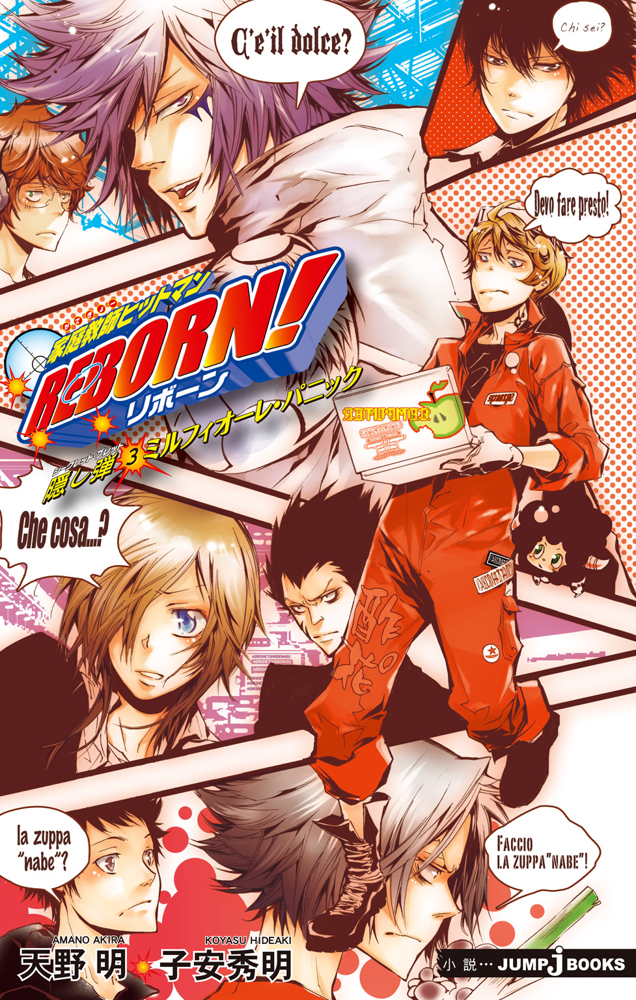
この本は縦書きでレイアウトされています。
また、ご覧になる機種により、表示の差が認められることがあります。
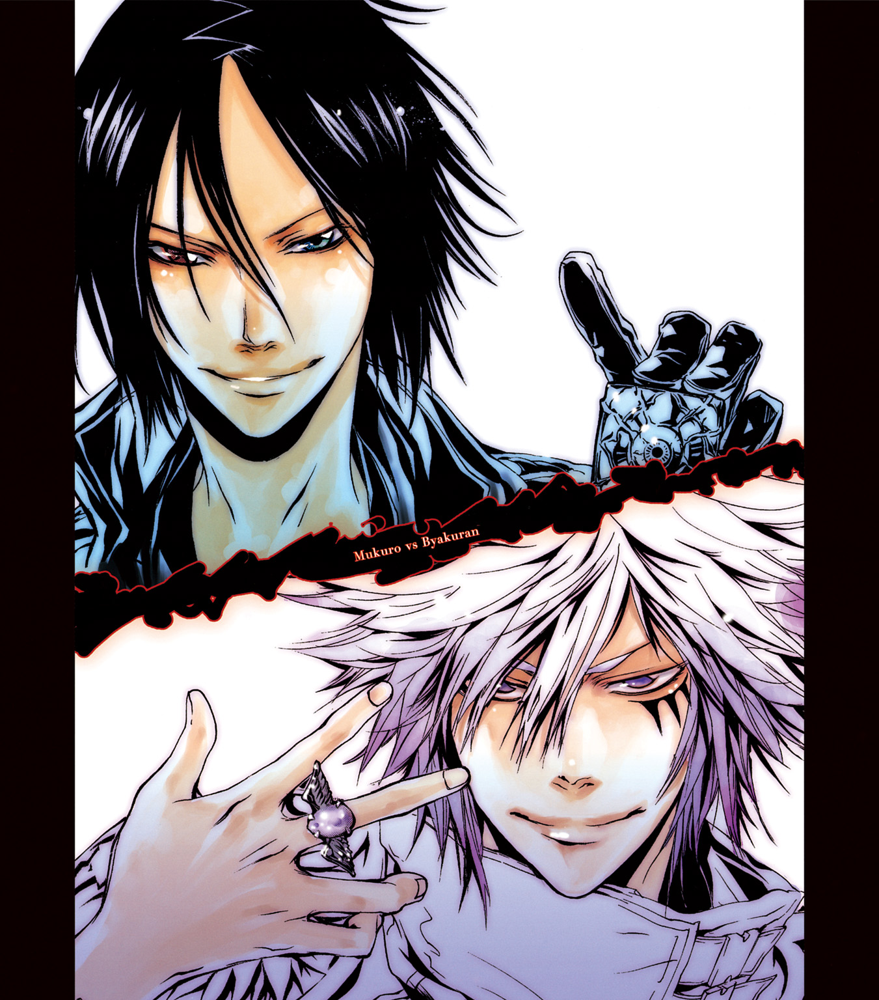
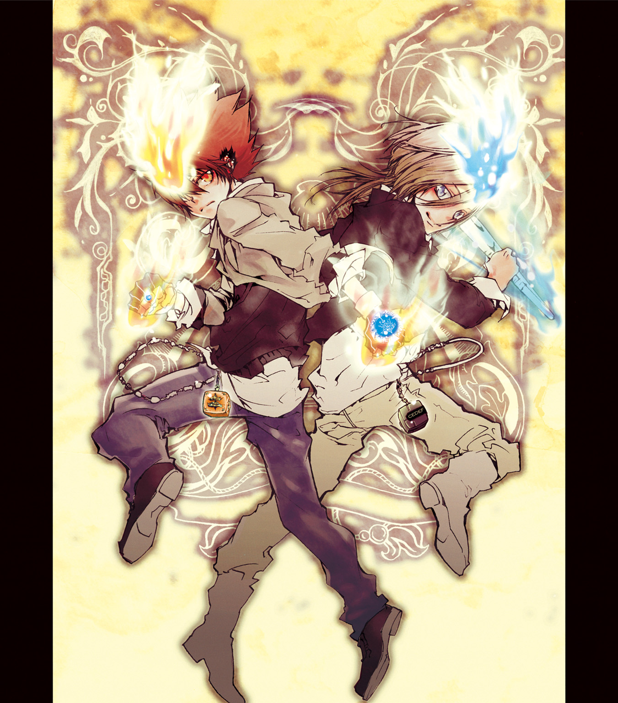
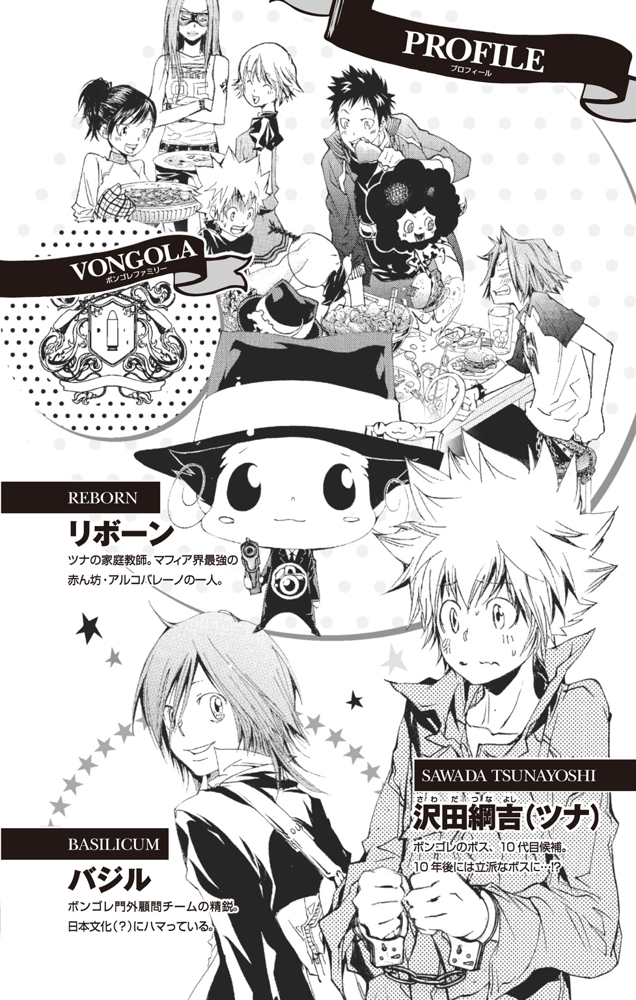
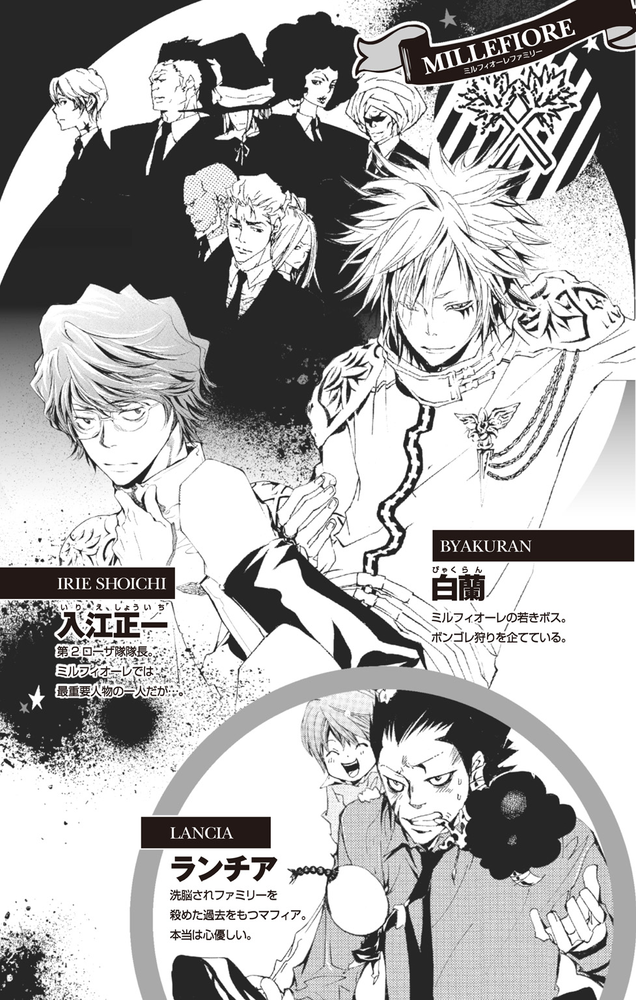
この作品はフィクションです。
実在の人物・団体・事件などにはいっさい関係ありません。
緑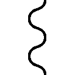たなびく並盛の♪
大なく小なく並が・いい♪
校歌の歌詞にもあるとおり、ここ並盛町の並盛中学校は、特別変わったところのないきわめて平凡な中学校だ。
これは――そんな平凡な世界をとりまく、平凡なマフィアたちの、平凡な日常を切りとった物語である。
......たぶん。
休日。
シンとしずまりかえった人気のない並盛中学校。
巨大マフィア・ボンゴレファミリーの次代ボスの座をかけて争われた通称『ボンゴレリング争奪戦』が終結し、平穏な時がもどってきたこの学校に――
「っしゃぁ！ これで完成だぜ！」
《スモーキン・ボム》獄寺隼人
性別／男 年齢／14歳
武器／ダイナマイト
本日の食材／とりたての山の幸
校庭の端にある大きな木の下。
目つきのするどいガラの悪そうな少年――獄寺隼人は、見た目とは裏腹の無邪気な笑顔でグッと拳をにぎりしめた。
獄寺の前には、大きな石を組みあわせて作った即席のかまどがあった。キャンプ場で料理をするのに使うものだ。
かまどには大きな鉄鍋がのせられ、下から薪の火があがっている。ダシ汁の中でぐつぐつと煮えているのは、新鮮そうな肉と色とりどりの山菜やキノコ。どの具材も、普通に店で売っているものにはない野生味を感じさせる。
このアウトドア風味いっぱいの鍋を、獄寺はたった一人で作りあげていた。真新しいシミのついたエプロンや、手にはられたバンソウコウが、彼の努力を物語っている。
獄寺は、どちらかといえば料理や家事が得意なほうではない。以前、竹寿司でバイトをしたときも、皿洗いさえまともにできなかった。
そんな彼が、なぜこんなことをしているのかというと――
「さて......あとは10代目をお呼びするだけだな」
獄寺はツナこと沢田綱吉――並盛中のクラスメイトにして、未来のボンゴレ10代目ボスである少年の顔を思いうかべる。
「10代目との絆を深めるには、同じ一つの鍋を二人でつつきあうのが一番か。あの人もいいこと言うぜ」
そう。すべては、自分と同い年ながら、生涯仕えるボスと決めたツナのため。ともに最高の鍋を食べようと、獄寺は朝早くから準備をしていたのだ。
と、そのとき、
「ガハハハハハハハハハハハハハハハハハハハハハハハッ！」
カン高い子どもの笑い声に、獄寺はハッと顔をあげた。
ガサガサッと木の枝がゆれ、小さな人影が地上にむかって飛び降りる。
「ランボさん、とーじょ......くぴゃっ！」
ガンッ！
着地に失敗し、地面にまともに顔をぶつけた牛柄タイツの子どもを見て、獄寺は苦々しげにつぶやいた。
「アホ牛ぃ......」
《幼きヒットマン》ランボ
性別／男 年齢／５歳
武器／手榴弾、10年バズーカ
本日の食材／ブドウ味のキャンディ
「が・ま・ん......」
涙をにじませながら、起きあがるランボ。
その情けない姿を見ていると、獄寺はこのウザいガキが、自分と同じようにマフィアの一員だとはとても思えない。
巨大マフィア・ボンゴレと、中小のボヴィーノという組織の格差があるとしてもだ。
「ったく、なにやってんだよ、てめーは」
迷惑そうな顔をしながらも、ランボの服についた泥を払ってやる獄寺。
「さっさとあっち行け。こっちはガキと遊んでるヒマは......」
「なんだこれ？ グツグツでグラグラー」
「おい、コラ！ 汚ぇ手を入れんじゃねーよ！ それは10代目にめしあがっていただく鍋なんだぞ！」
「ツナに？」
「あー、そーだ」
そう言って、獄寺はちょっと誇らしげに胸をはってみせる。
「10代目にハンパなものを食べてもらうわけにはいかねーからな。オレは朝の暗いうちから険しい山の中に入って、森をぬけ、滝をのぼり、熊とも戦って、そうやって手に入れた幻の......」
「ゲー、野菜ばっかでマズそー」
ガァン！
「な......っ!?」
ミもフタもないランボの言葉に、はげしくショックを受ける獄寺。
「バ、バカ野郎！ どれも簡単に手に入らねー極上の素材なんだぞ！ 10代目の右腕のこのオレだからこそ、これだけのものが......」
「ねーねー、ランボさんの鍋は？」
「ねーよ、そんなもん！」
「ねーの？」
「ねーよ」
「じゃー、ランボさんがこれをおいしくするもんねー！」
「は？」
けげんそうな顔になる獄寺の前で、ランボはゴソゴソと自分のもじゃもじゃアフロヘアの中を探りはじめた。
「あった！」
ランボがとりだしたのは、
「っ！」
髪の毛に引っかかってピンのぬけた〝手榴弾〟が鍋の中へ――
「うわぁぁぁぁ――っ！」
鍋に入る寸前でそれをキャッチした獄寺は、すぐさま遠くへ放り投げた。
ドガ―――――――――――ン！
「あらら？」
「『あらら』じゃねーよ、コラァ！ せっかくの鍋を粉々にするつもりか！」
「ホントはねぇ......こっちだもんね！」
そう言って、ふたたび髪の中からつかみだしたのは――
「ランボさんの～♪ アメ玉は～♪ ころころころの～♪ おいしいブドウ♪」
「なんだ、アメかよ。それなら大丈......なわけあっかーっ！」
キャンディを鍋に入れようとしたランボを、あわてて獄寺が止める。
「ざけんじゃねーぞ、アホ牛！ てめー、今すぐこっから消えろ！ つか、オレの視界から永遠に果てろ！」
せっかく作った鍋を、台無しにされてたまるか！ この鍋を守るためなら、どんなことだってやってみせる。マフィアには、いくらだってそれにふさわしい〝やり方〟があるのだ。裏社会を制してきた数々の――
「待てぃ、タコヘッド！」
「......っ」
不意の大声が、危ういところへ行こうとしていた獄寺を現実に引きもどした。
それと同時に、獄寺の胸にもやもやと不快感がこみあげてくる。
「誰が、タコヘッドだぁ......あぁーん？」
そのムカつく呼び方をする人物に、獄寺は一人しか心当たりがなかった。
《極限のパンチニスト》笹川了平
性別／男 年齢／15歳
武器／鍛えぬかれた拳
本日の食材／チューインガム
拳にバンテージを巻き、トレーニングウェアに身を包んだ笹川了平は、まさにランニング中のボクサーといった姿だった。
了平は、並盛中のボクシング部で部長をつとめている。ちなみに学年は、獄寺の一つ上で三年生。強い者は誰でもボクシング部に勧誘するというひたすら『ボクシング愛！』な男だ。
「おもしろそうな特訓をしているな、タコヘッド」
「はぁ？」
「それはなんという特訓だ？ 身体のどの部分が鍛えられるのだ？ おまえも自分を鍛えるよろこびに目覚めたのか？ ならば、ぜひ沢田とともに我がボクシング部に......」
「っあ――――――っ！ ウゼーウゼーウゼ――ッッッ！ これのどこが特訓に見えんだよ！ ただ、アホ牛ととっ組みあってるだけだろーが！」
「なるほど。たったそれだけで効果的なエクササイズとなるのだな。やるではないか、タコヘッド」
「って、わけわかんねーこと言ってんじゃねーよ！」
ボクシングしか頭にない了平に、獄寺のイライラはつのる一方だ。
ランボだけでなく、このウザい男もまとめて消してしまおう――
獄寺の思考が、また危うい方向へむかおうとしたとき、
「おっ、これが例の鍋か」
「えっ......？」
とつぜん、鍋に興味をもった了平に、獄寺は意表をつかれる。
そして、一つの気になる言葉。
――〝例の〟......？
「ほぉ、なかなかうまそうではないか」
「！」
興味津々に鍋をのぞきこむ了平を見て、獄寺はハッと我にかえり、
「お......おいっ！ てめー、まさか勝手に食う気じゃ......」
「オレをなめるな、タコヘッド！」
キッとにらみつけられ、思わず息をのむ獄寺。
「オレはつまみ食いなどはしない。なぜならオレは......」
「減量中だからな！」
「............は？」
だから？ という顔になる獄寺にかまわず、
「しかし、こんなこともあろうかと持ってきたものがある」
そう言って、自分の足首に縛りつけていたロープをたぐりよせる了平。
「おわっ！」
ガランガラン......やかましい音をたてて転がってきたのは、大きなドラム缶だった。なんと了平は、ロープで自分の足とドラム缶をつなげていたのだ。
「これをつけて走ると、なかなかいいトレーニングになる。今度から、正式な練習メニューに加えよう」
「相変わらずバカくせーことしやがって......」
あきれた目で見る獄寺。
「で、そのドラム缶がなんだっつーんだよ」
「それはな......フンッ！」
了平が、ドラム缶を肩にかつぎあげる。
「この中身に秘密があるのだ」
「中身？」
「この中には、減量中の口さびしさに最適な......ガムが入っている！」
小さなフタを開けた瞬間、さわやかなミントの香りがあたりに広がった。
「このガムを鍋に入れて食べることで、オレは減量にさしさわりなく鍋を楽しむことができるのだ！」
「はぁっ!?」
まさか、あのドラム缶の中身は全部ガムだというのか？ そんなものを鍋に入れられたりしたら――
「ざけんじゃねーぞ、バカ野郎ッ！ ンなことさせてたまる......」
「ガハハハハハッ！ ランボさんのブドウも入れる♪」
「ア、アホ牛ぃぃぃっ！」
獄寺の悲鳴がひびきわたった――そのとき、
「......やめて」
消え入りそうな声が、届いた。
彼女がそこにやってきたのは、偶然ではなかった。
指令が、下ったのだ。
ボスであるツナのために『守護者』という役割を果たすことは、彼女にとって大切な仕事だった。
でも、大切なのは、あくまでそれだけ。
自分と同じ役割につく他の者たちに、彼女はまだあまり関心を持っていなかった。彼らの前に、姿をあらわすつもりもなかった。
でも――
目の前の〝生命の危機〟を、見過ごすことはできなかった。
× × ×
「てめーは......！」
獄寺の顔に、緊張が走る。
ふらりと――不意に霧が晴れたかのようにそこに姿をあらわしたのは、右目に眼帯をつけた少女だった。
《幻を生きる少女》クローム髑髏
性別／女 年齢／13歳
武器／三叉の槍、幻術
本日の食材／豆腐
突然の少女の登場に、ランボと了平も思わず動きを止める。
「貴様はたしか......クリーム・まくら」
「クローム髑髏だろーが」
つい、横からツッコミを入れてしまう獄寺。
「そうそう、クレープだった」
「ちげーよ」
「クレープにクリームはつきものだしな」
「だからクローム......って、あー、もうどーでもいいんだよ、ンなことは」
「..................」
そんな獄寺たちのやりとりを、クロームは黙ってじっと見つめていた。
（ンだよ、こいつ......）
うるむような黒い瞳で見つめられ、獄寺はなんだか落ち着かない気もちになる。
そもそも、なぜクロームがここにいるのだろうか？ 正直なところ、獄寺は彼女のことがいまひとつよくわからない。
ただ確実にわかっているのは――
彼女が、かつてツナをねらっていた者たちの仲間だということ。
「おい、クローム髑髏！」
うだうだ考えるのは性に合わない。獄寺は正面から質問をぶつける。
「てめー、どーゆーつもりでここに来やがった？ ああン!?」
「............」
クロームの唇が、かすかに動いた。
「死んじゃうから」
「！」
獄寺がハッと息をのんだ。
「死ぬって......そ、そりゃ、どーゆーことだ!? まさか、10代目にかかわることなのかよ！」
「........................」
「黙ってねーで、なんとか言えよ！ てめー、いったいなんでここに......」
と、クロームが不意に腕をあげた。
「っ！」
思わず身がまえる獄寺だったが、クロームはただ静かに人差し指をのばした。
了平の持つドラム缶にむかって。
「ガムをお鍋に入れると、のどにつまらせちゃうから」
..............................。
そして――
「お、おい......」
長い沈黙のあと、ようやくといった感じで獄寺が口を開く。
「おまえ......それ、マジで言ってんのか？」
コクリ。うなずくクローム。
「ガムは......命にかかわるから」
「かかわんねーよ！ つか、ガムがのどにつまるか！ モチじゃねーんだぞ！ だいたい、てめーは思わせぶりに......」
「クレープ！」
獄寺を押しのけ、了平がクロームの手をとる。
「そうだったのか！ おまえは、オレの命を救ってくれたのだな！」
「死んじゃうのは......ダメだから」
「うおおっ！ オレは極限に感動したぞ、クレープっ！」
うれしそうに叫ぶ了平を見て、獄寺はやれやれとため息をついた。
と――
「あの......」
「あぁ？」
声をかけてきたクロームに、獄寺は不機嫌そうな顔をあげる。
「これ......」
どこから出したのか、クロームは白い豆腐がのった皿を手にしていた。
「入れて......いい？」
「は!?」
思わず豆腐に鼻を近づけ、においをかいでみる獄寺。
特に、毒物らしきものが入っている感じはしない。本当にただの豆腐のようだ。
「入れちゃ......ダメ？」
「それは......」
「ガムの代わり」
「には、ならねーだろ」
「......わかった」
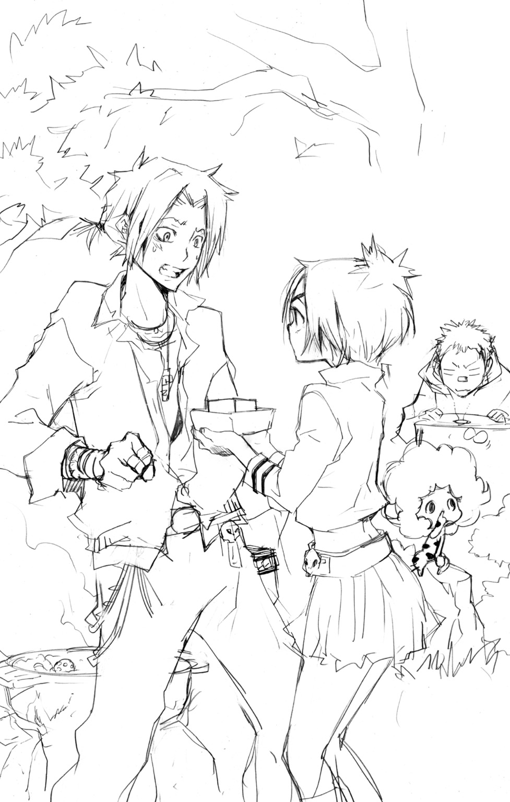
「いや、ガム入れるよりは、そっちのがずっと......」
「......わかった」
「あっ、別に、入れていいって言ってるわけじゃ......」
豆腐を入れようとしたクロームの手を、獄寺はとっさにつかみ、
――ぺちゃ。
「あ」
鍋の手前。地面に落ちた豆腐は、あっけなくくずれた。
「....................................」
なんともいえない重い空気が流れる。
と、そんな空気をまったく気にせず、
「ガハハハハハハハッ！ 落ーとしちゃった、落ーとしちゃった♪ ばっちっち♪」
「いっ、いちいち騒いでんじゃねーよ、このアホ牛！」
悪いという気もちをごまかすように、ランボをどなりつける獄寺。
そしてクロームは、
「............」
「あっ、おい......」
タタタタタタタ......――
なにも言わずに背をむけ、その場から走り去っていった。
「......なんだったんだ、あいつ？」
わけがわからないという顔で、獄寺は頭をかく。
「ま、いーや。とにかく、いまはさっさと10代目をお呼びして......」
「おっス、獄寺」
「............」
頭をかかえたくなる獄寺。
せっかく邪魔者が一人いなくなったと思ったのに、また邪魔者が来るとは......。
《生まれながらの殺し屋》山本武
性別／男 年齢／14歳
武器／時雨金時、山本のバット
本日の食材／とれたての海の幸
スポーツマンらしいさわやかな笑顔で、彼はそこに立っていた。
山本武。並盛中野球部の部員で、獄寺が転校してくる前からツナと仲がよかったという......ある意味、了平たち以上にムカつく男である。
「よっ」
「『よ』じゃねーっつんだよ」
わざとらしく舌打ちしてみせる獄寺。
しかし、山本はのほほんとした顔で、
「悪ぃーな、遅れちまって」
「はぁ？ 誰もてめーなんか呼んで......」
「でも、待たせたぶん、すげーのとってきてやったからさ。ほら、見ろよ」
そう言って、肩にかけていた大きなクーラーボックスを開けた瞬間、
「おおお―――――――っ！」
了平とランボから歓声があがる。
獄寺も、思わずつばをのむ。
クーラーボックスに入っていたのは、宝石のように輝く活きのいい魚介類の数々。見ているだけで、そのおいしさが伝わってきそうなものばかりだった。
「やっぱ新鮮なのが一番だからさ。知りあいの漁師のオッサンに頼んで船に乗せてもらったんだ」
「おまえがとってきたのか？」
「うっス、笹川先輩。朝の３時に出たんスけど、けっこう遠くに行ったもんでもどるのが遅くなっちゃって」
「３時!?」
思わず裏返った声を出してしまう獄寺。
（オレが山に行ったのは４時だっつーのに......こいつ......）
唇がくやしそうにかみしめられる。
（つか、どーゆーつもりなんだ、山本のヤローは！ いきなり、こんなモン持ってきやがって。こんな......ウマそーな......）
ジッと魚に見入っている自分に気づき、獄寺はあわてて頭をふる。
（いや、なに考えてんだオレ！ こんなつまんねー魚なんかより、オレが用意した食材のほうがずっと......）
「見てるだけじゃつまんねーだろ、獄寺」
「っ！ な、なに言ってんだよ！ オレは、こんなの見てなんか......」
「早く鍋にして、みんなでおいしく食べようぜ。なっ」
「えっ!?」
「まずはダシの出そうなやつから......」
「ちょっ......ま、待てよ！ 勝手にそんなもの入れんじゃねーよ！ これはオレと10代目の鍋だぞ！」
「みんなの鍋だろ」
無邪気な笑顔で返す山本。
「それに、いろいろ入れてうまくなったほうが、ツナだってよろこぶぜ」
「ンな......」
たしかに、山本の言うとおりかもしれない。キャンディやガムを入れるのに比べれば、はるかにマシだ。
「........................」
でも――
ヒラメや伊勢エビなどの豪華な海の幸を入れられてしまっては――
自分の用意した食材が、脇役っぽくなってしまうではないか！
「やっぱ、ダメだ！ この鍋とおまえの魚は、なんつーか、その、食いあわせ的なものが......」
そのとき、
「！」
獄寺はギクッと身体をこわばらせた。
消えていた。先ほどまで山本がずっと見せていたあたたかな笑顔が。
「そうか......」
「なっ、なんだよ、山本っ！」
「おまえ......そういうつもりなんだな」
「っ!?」
まさか、自分の考えていることが山本にバレたのか？
山本は、いつもは天然なくせに、たまにするどいところのあったりする男だ。
しかし、山本が次にとった行動は、獄寺の予想を完全にこえていた。
「なっ......!?」
背中にくくりつけていたバットをスラリとぬき放つ山本。
山本のバット――それは、勢いよくスイングすることで刀になる必殺の武器だ。
「いくぜ」
バットが大きくふりかぶられる。
あまりのことに、獄寺の思考が完全に止まってしまう。
その瞬間――
バシュッ！ バシュッッッッッ！ ババババババッ！！！
「く......っ！」
するどく肉を断ち斬る音が、獄寺の耳をふるわせる。
一切の容赦なき破壊の斬撃音！
「............」
だったが、
「............？」
それだけだった。
衝撃も痛みも、なにも感じない。
自分が無事らしいと気づいた獄寺は、閉じていた目をおそるおそる開ける。
すると、
「え......っ？」
山本が、ふたたび笑っていた。
きれいに刺身の盛りつけられた大皿を持って。
「ほらよ、獄寺。オヤジみたいにうまくはさばけないけど、これはこれで......な」
「？？？」
「遠慮すんなって。わかってんだからさ。おまえ、鍋より先に刺身で食べてみたかったんだろ」
ガクン！
はげしく脱力する獄寺。
そうだった......山本とはこういう人間だった。
「やるではないか、山本。さすがは寿司屋の息子だな」
「あ、先輩たちもどうっスか？ まだ魚もいっぱいあるんで」
「ランボさん、食べるもんねー！ このイチゴっぽい色のは、ランボさんのホッペ色だもんね！」
新鮮な刺身を前に大はしゃぎの了平とランボ。
それを見た獄寺がハッとなる。
これは――チャンスかもしれない。
二人が山本の刺身に気をとられているスキに、自分は鍋を持ってどこか別の場所に行けばいいのでは？
いや、しかし、それではあの人に言われた〝条件〟を果たせなくなることに――
シュルルルルルルルルルルルルルルルルルルルルルルッ！
「！」
するどく風を切り裂く飛来音。
今度こそまちがえようのない強烈な殺気を感じ、獄寺はふりかえると同時にダイナマイトをとりだした。
「２倍ボムッ！」
空中にバラまかれる大量の小型ダイナマイト。いっせいに爆発したそれは、爆炎と衝撃の盾となって獄寺たちの前に広がった。
ヒュンッ！
「っ......！」
獄寺の顔が引きつる。
その頰に、スーッと走る赤い線。
殺気をともなった飛来物は、盾をつきやぶって獄寺を襲った。
爆発の衝撃で、わずかに進路がズレていなかったら、それは確実に獄寺の頭をうちくだいていただろう。
「..................」
ゆっくりとうしろをむき、自分の顔をかすめた凶器を確認する獄寺。
地面に突き刺さっていたのは、陽光をあびてにぶく輝く――
金属製のトンファーだった。
「僕の学校でなにしてんの？」
《最凶の風紀委員長》雲雀恭弥
性別／男 年齢／？
武器／仕込みトンファー
本日の食材／小動物たちの群れ
休日にもかかわらず、彼は黒い学ランを羽織っていた。それは、並盛中を守る風紀委員の証。風紀委員長にして、怖いもの知らずの猛者たちの頂点に立つ最強の不良。
それが、雲雀恭弥だった。
「キミたちか」
冷たい目で獄寺たちを見る雲雀。
「ちっ......」
獄寺の額を、生ぬるい汗が伝う。
鍋を作ることに夢中になって、この男の存在をすっかり忘れていた。
愛する並盛中のためなら、なにをしてもかまわないという危険すぎる男。休日とはいえ、学校の中でなにかやろうとしたら、この男が出てこないわけがなかった。
「あっ、ちょうどよかった。ヒバリもいっしょに鍋やらね？」
「おい、山本ッ！」
あわてて声をはりあげる獄寺。
「ボケたこと言ってんじゃねえ！ こいつが鍋なんかやるわけ......」
「やるよ」
「は!?」
予想外の返事に、獄寺は耳を疑う。
「じゃ、はじめようか......」
かすかな金属音とともに、雲雀の手にトンファーがにぎられる。
「群れてる小動物たちは全員咬み殺す」
キィィィィィィィィィィィン！
「......っとぉ！」
力の乗ったトンファーの一撃を、かろうじてバットで受け止める山本だったが、
「うおっ!?」
雲雀のトンファーからカギ爪があらわれ、山本のバットをくわえこむ。
そのまま手首を返してバットを払いのけた雲雀は、もう一方の手に持ったトンファーを山本めがけて――
ガッ！
「ぐ......っ！」
容赦ない一撃で吹き飛ばされた山本の身体が地面の上をすべる。
運動神経バツグンで『生まれながらの殺し屋』といわれるほどの潜在能力を秘めた山本が、雲雀の前では子どもあつかいだった。
「わ、悪ぃーな、獄寺......。やっぱ......手ごわいっつーか......」
「う......うるせー......」
山本のすぐそばには、ボロボロの獄寺と了平が倒れていた。二人とも、山本より先にやられていたのだ。
「誰もてめーになんか......期待してねーんだよ......」
必死に起きあがろうとする獄寺だったが、まったく足に力が入らない。
その間に雲雀は、
「これは風紀委員が没収する」
大きな鍋を軽々と持ちあげ、獄寺たちに背をむけ歩きはじめた。
「まっ、待てよ、ヒバリぃっ！」
あわてて叫ぶ獄寺だったが、その声にも力はない。
「くぅ......」
つらそうに歯が食いしばられる。
......甘かった。
鍋を作るだけで、すべてがうまくいく。ツナによろこんでもらえて、ファミリーとしての絆も深めることができる......単純にそう考えていた。
なのに、その結果がこれだ。
「すみません......10代目......」
「あやまんのは、まだ早いんじゃね？」
「っ！」
背中に腕が回され、獄寺の身体がグッと持ちあげられた。
「山本ッ!?」
さらに、反対側からも腕が回され、左右からささえられるようにして、獄寺はその場に立たされた。
「芝生頭......」
山本とともに獄寺をささえる了平は、苦しそうながらも力強く笑ってみせた。
「先輩、あとどれくらいイケそうッスか？」
「くやしいが、タコヘッドをささえるので限界だな。山本は？」
「ハハ......右に同じっス」
こんなときでも、明るい声で返す山本。
「獄寺、まだダイナマイト残ってっか？」
「あっ、当たり前だ！ ヒバリくれー、すぐに吹き飛ばしてやるぜ！」
「うっし、上等だ」
そうやって話している間にも、雲雀は獄寺たちからどんどん遠ざかっていく。
「よく聞けよ、獄寺。オレも笹川先輩もこれ以上は動けそーにねえ。おまえだけなんだ......ヒバリを止められんのは」
「っ......！」
「おまえ、ツナのためにってがんばったんだろ。ここであきらめちまったら、もったいなくね？」
「誰が......」
山本の言葉が、消えかけていた獄寺の心の炎を燃えあがらせる。
「誰があきらめるかよぉぉぉぉぉぉぉぉぉぉぉぉぉぉぉぉぉっ！」
叫ぶと同時に、獄寺は残っていたすべてのダイナマイトを、遠ざかっていく雲雀にむかって投げつけた。
「......っ」
雲雀の足が止まる。
しかし、ふりむいた瞬間、すでにダイナマイトは目と鼻の先にあった。
ドガァァァァァァァァァァァァァァァァァァァァァァンッ！
嵐が吹き荒れた。衝撃と轟音が並盛中の校庭をふるわせる。
「やったぜ！」
爆発が雲雀をとらえるのを見た獄寺は、会心の笑みをうかべた。
しかし、
「な......っ!?」
爆煙が晴れたとき――そこには、ほとんど無傷といっていい雲雀が立っていた。
さらに、獄寺をがく然とさせたのは、
「オ......オレと10代目の鍋が......」
雲雀の足もとには、まともに爆破の衝撃を受け、中身をすべてまきちらしてしまった鍋が転がっていた。
「おいおい、獄寺......」
「やってしまったな、タコヘッド」
「って、なにてめーら他人事みてーに言ってんだよ！ ダイナマイト投げろっつったのは、てめーらだろーが！」
半分涙声になりながら、山本たちにつかみかかる獄寺。
一方、
「........................」
ぽりぽりと頰をかく雲雀。
そこには、獄寺の攻撃でほんのわずかな火傷ができていた。
「小動物のくせに......もう少し楽しめそうだね」
雲雀の目に、殺気があふれる。
血を吸ったばかりのトンファーが、ふたたび雲雀の手ににぎられ――
ズガ――――――――――――――ン！
「......！」
トンファーが地面に落ちた。
打ち落とされたのだ。正確無比な銃撃によって。
そして、爆風で引っくりかえっていた鍋が、ヒョコッと持ちあがった。
その中から、硝煙たなびく拳銃とともにあらわれたのは――
「ちゃおっス」
大根が、獄寺にあいさつした。
いや......よく見れば、それは大根の着ぐるみをかぶった赤ん坊だった。
《マフィア最強の赤ん坊》リボーン
性別／男 年齢／２歳？
武器／拳銃、死ぬ気弾
本日の食材／自分自身？
リボーン――ボンゴレファミリー９代目ボスの依頼で来日し、ツナを一人前のマフィアにしようと鍛えている家庭教師である。
「リボーンさん......ひょっとして、ずっと鍋の中に......？」
「あー、そーだぞ」
あっさり言われ、獄寺の顔が引きつる。
「すいません、リボーンさん！」
獄寺は、両手を地面についてガバッと頭を下げた。
「リボーンさんにアドバイスされたのに、それをメチャクチャにしちまって......」
リボーンのアドバイス。
それは、ツナと仲間たちが勝利したこの並盛中学校で、鍋パーティーを開くこと。
昔から、戦場の跡で、戦いの記憶をふりかえりながら鍋を囲むのは、仲間同士の絆を深める大切な儀式である――
そう言われたからこそ、獄寺は一生懸命いままで準備をしてきたのだ。
なのに――
「こんなんじゃ......オレ、10代目の右腕、失格ッスよね」
「おまえだけのせいじゃねーって、獄寺」
「うっせーよ、山本！ リボーンさんはオレを信頼して、オレだけにここで鍋パーティーしろって言ってくれたんだぞ！」
「え？ いや、それ、オレも言われたし」
「はぁっ!?」
山本の言葉に、目を丸くする獄寺。
「うむ。オレも誘いを受けたから、こうしてここに来たのだ」
了平まで？ まさか、ここに来た者すべてが、リボーンに呼ばれたというのか？
「どういうことっスか、リボーンさん！」
「オレは最初から、おまえとツナだけなんて言ってねーぞ」
「あ......」
ハッとなる獄寺。言われてみれば、たしかに......。
「ツナの仲間はおまえだけか？ ツナは、おまえしかファミリーにできない小物か？」
「そっ、そんなこと......」
あわてて否定しようと顔をあげた獄寺は、すぐに顔を赤くして下をむいた。
無性に恥ずかしかった。自分がツナの格を落とすようなことをしてしまったのが。
「それにな、おまえはまだ失敗したってわけじゃねーぞ」
「えっ......？」
それはいったい――獄寺が聞こうとした瞬間、
ビュオッ！
リボーンを背後から襲うトンファーの一撃。しかし、彼は、それをあざやかな宙返りで回避した。
「楽しいね、赤ん坊」
トンファーを手に、心の底から楽しそうな笑みを見せる雲雀。
「キミに誘われた鍋パーティー、たしかに楽しいよ」
「そっか」
リボーンも、ニッと不敵に笑い、
「おい、獄寺」
「は、はいっ」
「ちょっと、ヒバリと遊んでくる。あとのことはまかせたぞ」
「あっ、リボーンさん......」
獄寺が止める間もなく、リボーンは襲いくる雲雀をつれて、はるか遠くへと消え去っていった。
「........................」
その場に立ちつくす獄寺。
いったい、どうすればいいのだ？ 鍋は完全に引っくりかえってしまい、他の食材もバトルのせいですべて台無しだというのに――
「なにしてるんですか、獄寺さん！」
そのときだ。
ちょっぴり怒ったような少女の声が、獄寺の耳に届いたのは。
「おまえ......バカ女！」
「誰がバカ女ですか！ ハルです！ 三浦ハルですよ！」
そう言って、ぷっと頰をふくらませる少女のうしろには、了平の妹の笹川京子の姿もあった。
京子は、おだやかに微笑み、
「リボーン君に聞いたの。ツナ君とみんなでお鍋するんだよね」
「そっ、それは......」
「ハルたち、楽しみにしてたんですよ。なのに、どーしてまだなにも用意できてないんですか？」
「う......」
「京子ちゃんと、こーんなにお鍋の具も買ってきたのに！」
「えっ！」
ハルと京子は、いろいろな食材の入ったスーパーの袋を持っていた。
それを見た獄寺の顔に、明るさがもどる。
まだやり直せる......自分の用意した食材はダメになったが、この材料があれば、新たに鍋を作り直すことができる！
「どーする、獄寺？ まだ、ツナと二人だけでとか言う？」
山本にそう言われ、渋い顔になる獄寺だったが、
「......と、特別に許してやるよ。おまえらといっしょに......鍋パーティー」
「よし！」
山本はうれしそうに手をたたくと、すすんで壊れたかまどを直しはじめた。
「さー、みんなで協力してやろーぜ！」
「お――っ！ よい子のランボさんもお手伝いするもんね！」
「って、アホ牛ぃ！ ヒバリとやってる間、てめー、どこに逃げてやがった！」
並盛中の校庭に、ふたたび活気がもどってくる。
と、そのとき、
「あ」
獄寺が、ハッと顔をあげた。
――10代目を呼んでこよう。
みんなでいっしょに鍋を作るほうが、きっとツナもよろこんでくれる！
「おい、山本！ オレ、ちょっと10代目を呼びに......」
「待ちなさい、隼人」
「！」
不意に呼び止める声。
一瞬にして青ざめた獄寺は、そこにこの世でもっとも苦手とする女性の姿を見た。
「ア......アネキ!?」
《毒サソリ》ビアンキ
性別／女 年齢／17歳
武器／ポイズンクッキング
本日の食材／？？？
「うぐっ！」
姉の姿を見た瞬間、獄寺は腹をおさえてその場にうずくまった。
それは、幼いころから彼女の作る暗殺料理『ポイズンクッキング』を食べさせられていたことによる反射的なものだった。
「楽しそうね、山本武」
「え......オレ？」
なぜかビアンキににらまれ、驚く山本。
「リボーンに聞いたわ。新鮮な魚介類を用意して調子にのってるようね」
「いや、調子にとかは......」
「でも、私のほうが新鮮でおいしいわ」
そう言って、ビアンキは自分のそばにある大きな冷蔵庫を指し示した。
「あっ、獄寺のアネキも、サカナとか持ってきたんスか？」
「ええ、サカナ的な名前のものよ」
「名前？」
「ついさっき、つかまえたばかりなの。いつもみたいに、家の二階でゴロコロしてるところをね。フフ......これでリボーンも家庭教師なんかやめて元の殺し屋に......」
「ちょっと待てぇっ！」
とつぜん、獄寺が立ちあがった。
顔をさらに青くして、ビアンキの傍らにある冷蔵庫を凝視する。
人が一人楽々入りそうな冷蔵庫を。
「まさか......てめぇ......」
「あぁ、楽しみだわ。ツナのためのお鍋を作るのよね......」
「ツナをおいしく食べるためのお鍋」
うっとりした目でビアンキがそう口にした瞬間、
「じ......」
「10代目ぇぇぇぇぇぇぇぇぇぇぇぇぇぇぇぇぇぇぇぇぇぇぇぇぇぇぇぇぇぇぇぇぇぇぇぇぇぇぇぇぇぇっ！」
獄寺の悲鳴が、並盛町の空高くにこだましていった。
――ご搭乗のみなさま。
このたびは当機をご利用いただき、まことにありがとうございます。
当機は、東京発ローマ行きの......――
12時間の空の旅。
彼らは、日本から遠くはなれたイタリアへとむかう。
「あ、動きだしましたね」
エコノミークラスの窓側に座っている少年が、目を輝かせながら外を見た。
黒いスーツを着たバジルという名の彼は14歳。好奇心にあふれたやさしい顔立ちの少年だった。
「飛行機には何度も乗っていますが、恥ずかしながら、この瞬間はいつも胸がはずんでしまいます」
そう言って、照れくさそうに笑ってみせるバジル。折り目正しい話し方に、生真面目な性格がよくあらわれている。
一方、
「..................」
バジルの隣には、同じく黒スーツ姿の男が座っていた。
気さくに話すバジルとちがい、口数が多いタイプには見えない。黙っていても威圧感のある顔は、バジルと見事なまでに対照的だ。
全体的に大人びた空気をただよわせ、事実バジルより十歳ほど年上である。座っていてもわかるほど背が高く、長い脚をせま苦しそうに席の間で折り曲げている。
「そろそろ飛びますよ」
ふわり。
飛行機のうかびあがる感覚。
やがて機体は水平飛行に入り、シートベルト着用のランプが消えた。
「ふぅ......」
シートベルトをはずし、息をこぼすバジル。
「日本とも、しばしのお別れですね」
窓のむこうの大地を見つめ、すこしさびしそうに目を細める。
彼は『ＣＥＤＥＦ』という組織のメンバーだった。通称・門外顧問チームとも呼ばれるこの集団は、巨大マフィア・ボンゴレファミリーの一部でありながら本部と距離をおき、外から組織のために働く――いわば、少数精鋭の隠密部隊だ。
リーダーである通称『親方様』は、ボンゴレの10代目ボスとなる少年・沢田綱吉の父親でもあり、それだけ『ＣＥＤＥＦ』という存在の持つ意味は大きい。
まだ14歳という若さでありながら、そんな重要な組織で活躍するバジル。
彼は今回、『親方様』の指令で、イタリアから日本にやってきていた。
ボンゴレリング争奪戦――
ボンゴレファミリーの次期ボスを決める戦いにおいて、バジルは無事に自分の使命を果たした。
そして、彼は新たに招集を受け、帰国するための飛行機に乗ったのである。
「なにかやり残したことがあったか？」
「え？」
ずっと外を見ていたバジルは、隣席の男の言葉にハッとなった。
「いえ、ランチア殿！ 拙者にとって大事なのは、なによりもまず親方様のご命令。それをさしおいて日本に残るなど......」
「あわてるな。責めているのではない」
「あ」
落ちついた声によって、我にかえるバジル。
男の口もとが、かすかにほころぶ。そうやって笑ってみせると、いかめしい顔がほんのすこしやさしげに見えた。
ランチアと呼ばれた彼は『ＣＥＤＥＦ』のメンバーではない。
だが、リング争奪戦の最終局面で、バジルたちのピンチを救ってくれた恩人だった。
北イタリア最強の武人・ランチア。
彼は現在、とある〝用事〟の途中であり、それを再開するべく、バジルとともにイタリア行きの飛行機に乗っていた。
「すみません、ランチア殿」
バジルが、恐縮して頭をかく。
「その......日本には、昔からずっとあこがれていまして、正直もうすこしいたかったという気もちが......」
「そうか」
「ですが、日本ではとてもすばらしい体験をさせていただきました。初めて、本場のスシも食べることができました」
そのときのことを思いだし、バジルはうっとりと目を細める。
「ああ......本物の日本のスシ。その味は感動的であり衝撃的でした。とろけるようなおいしさのなかに、突然あらわれるワサビのするどい辛さ。やさしさのなかの厳しさ。まさにゲイシャとサムライ。あれぞ日本のブシドーというものです！」
「............」
力説するバジルに対し、コメントにつまるランチア。
一方、バジルはさらに興奮し、
「ですが、スシだけではありません！ 日本には、他にもたくさんすばらしいものがあるのです！ たとえば！ たとえばですね......そう！」
「いいかげんにせいっ！」
突然の怒声。
彼をしかりつけたのは、前方の少し離れた席にいる気難しそうな老人だった。
バジルは、きょとんとなり、
「あの......拙者になにか？」
「やかましい！」
「え？ え？」
「貴様の声がうるさいと言っておるのじゃ！ ワシを眠らせぬつもりか！」
「あ」
バジルはあわてて通路に飛びだすと、老人にむかって頭を下げた。
「すみませんっ。つい夢中になってしまって......」
「............」
ランチアが、無言のまま腰をあげた。
そして、バジルの隣に立ち、大きな身体を深々と折り曲げる。
「ランチア殿......？」
思わぬ行為におどろくバジルだったが、すぐにいっしょになって頭を下げる。
すると、老人も怒りが治まったのか、
「......フン」
不機嫌そうに鼻をならしつつも、自分の席に座りなおした。
バジルはホッと胸をなでおろし、感謝のまなざしをランチアにむける。
「すみません。あなたまでこのような......」
「非があるのは、話の相手をしていたオレも同じだ。あやまる必要はない」
「ランチア殿......」
と、
「......？」
バジルは、ランチアがなにか引っかかったような顔をしているのに気づいた。
「どうかされましたか？」
「ん？ いや......」
バジルの問いかけに、ランチアは軽く頭をふってみせる。
「なんでもない。おまえが気にするようなことではない」
「はぁ......」
そのときだ。
「あのー」
おどおどした声にバジルがふりかえると、そこにはカートを押している若いＣＡの姿があった。
自信のなさそうな態度と、幼さの残る顔立ちを見ると、まだ新人らしい。
「その......」
なにか口ごもりつつ、気まずそうにバジルを見るＣＡ。
きょとんとしていたバジルだったが、しばらくして、
「あ......申しわけありません。ここに立っていたら邪魔ですよね」
あわてて通路から座席に引っこむ。
ちなみに、ランチアはとっくに自分の席に腰をおろしていた。
「失礼します」
通路からどいてくれたバジルに一礼し、彼女はカートを押して――
「あっ、すみません。飲み物のおかわりをいただけますか？」
「え？ はい......何がよろしいですか？」
「日本茶です」
即答だった。
「フ......」
ふたたびランチアの口もとがほころぶ。
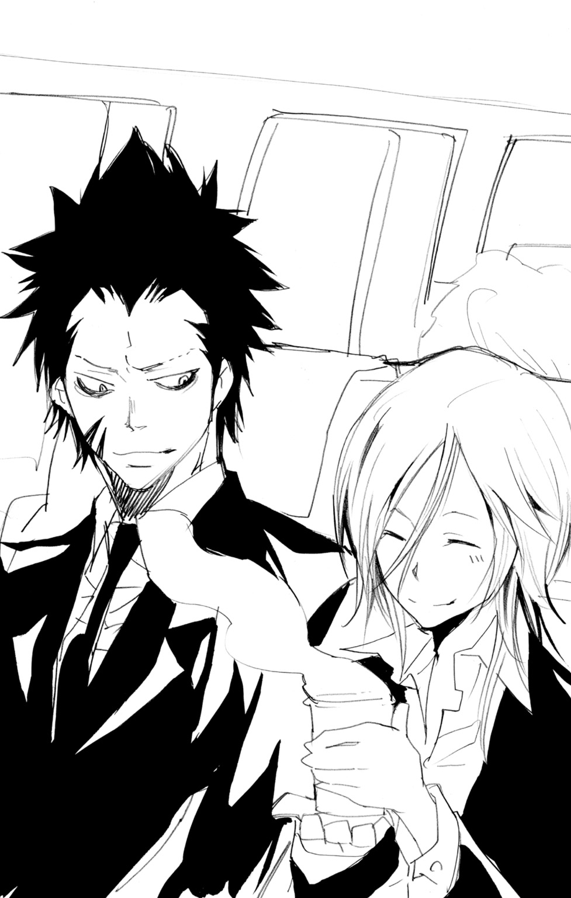
香ばしい湯気をただよわせるコップを、笑顔で受けとるバジルを見て、
「本当に日本のことが好きなのだな」
「はいっ！」
すかさず目を輝かせるバジルだったが、ハッと口もとをおさえると、ひそめるように声をちいさくして、
「日本は親方様のふるさとです。なので、いろいろと教えていただきました」
親方様――バジルの所属する組織のリーダーは、彼の尊敬すべき『師匠』でもあった。
「日本のことだけではありません。格闘の技や隠密の技、野外での知識に緊急の医術、ジャンケン必勝法にＴＶゲームの裏技......」
途中からおかしなものに変わった気がしたが、ランチアは沈黙を保った。
「親方様は本当にすばらしい方です。いえ親方様だけでなく、拙者はよい仲間たちにめぐまれました。イタリアで皆と再会できるのが、本当に待ち遠しいです」
ありのままの気もちを口にするバジルを、ランチアは好ましそうに見つめる。
「仲間......か」
「はいっ」
笑顔でランチアに答えるバジル。
しかし、つづく彼の言葉が、ランチアの表情を一変させる。
「もちろん、ランチア殿も我々の仲間です」
その瞬間――
「........................」
「......え？」
かすかに目を見開いたランチアが、ゆっくりと顔をうつむかせる。なにかに耐えるかのように、下唇をかみしめて。
「あ、あの......ランチア殿？」
「..................」
「拙者......なにかおかしなことを......」
「......ない」
「え？」
「オレはおまえたちの仲間ではない」
静かな一言。しかし、その言葉は重くバジルの胸にひびいた。
「オレには......そのように言われる資格などないのだ」
「あ............」
かすかな息をもらしただけで、かえす言葉の見つからないバジル。
彼は知っていた。
ランチアがそのように言った理由を。
５年前――
ランチアは望まぬ〝罪〟に手を染めた。
北イタリアのとあるマフィアの一員だったランチア。
しかし、そのファミリーは、マフィアという存在を憎む少年――六道骸によって、一人残らず惨殺された。
骸の術で洗脳された――ランチアの手によって。
「..................」
二人の間に、気まずい沈黙が流れる。
現在、骸が倒されたことで、すでにランチアの洗脳はとけている。
しかし、仲間をあやめたことによる罪の意識は消えず、ランチアはいまも亡くなった者たちの遺族の家を回りつづけているのだ。
そんな彼の心の傷を無神経にえぐってしまった――自分の失敗に気づいたバジルはあわてて、
「あの......ラ、ランチア殿......」
必死になにか言おうとするが、かけるべき言葉が見つからない。
と、そのとき、
「まったくどうなっておるのじゃ！」
聞きおぼえのあるどなり声が、バジルの耳に届いた。
思わず視線をむけると、怒っていたのはやはり先ほどの老人だった。
しかも、相手は、バジルが飲み物を受けとったあのＣＡだ。
「す、すみません......本当に......」
「ゴチャゴチャ言う前にやることがあるじゃろうが！」
「は、はいっ」
老人の怒りにおびえつつ、あわててタオルをとりだすＣＡ。
飲み物でもこぼしてしまったのだろうか......そう推測するバジルだったが、
「イヤねー、あれワザとでしょ」
「やっぱそう見えた？ タチ悪いよね」
「ワザと飲み物こぼしてＣＡに文句言うなんてさー」
ひそひそ話す乗客の声が耳に入り、バジルはおどろきに目を開く。
「グズグズするな！ 早くせいっ！」
「は、はい......いますぐに......」
「ええいっ！ だから、こんなせまい席など気に食わなかったのじゃ！ おい、貴様！」
「は、はいっ」
「ワシの席をファーストクラスに変更せい！ いますぐにじゃ！」
「で、ですが......座席はすべて満席......」
「できぬというのか！ それはつまり、ワシに本気ですまないと思っておらぬということじゃな！」
「そんな......そのようなことは......」
老人の無茶な要求に対し、ＣＡは完全にすくみあがっていた。
そして、とつぜんのこの騒ぎを嫌がる空気はあるものの、二人の間に割って入ろうという者はあらわれない。
「..................」
このまま放っておけない――
バジルが立ちあがった瞬間、
「......あ」
彼よりほんのわずか早く、ランチアが席を立った。
そして、おびえるＣＡをかばうように、老人の前に進みでる。
「なっ、なんじゃ貴様は！」
おどろく老人だったが、すぐに怒りの矛先をランチアにむける。
「ワシになにか用か！ なんじゃその目は！ ワシに言いたいことでもあるのか！」
「..................」
「なっ、なにか言わんか！ なにを黙って突っ立っておる！ 貴様いったい......」
休みなくつづく老人の怒声。しかし、ランチアはそれを沈黙のまま受け止めつづけた。老人の怒りを、すべて自分にむけて吐きださせるかのように。
「き......貴様......」
やがて、老人も言葉がつき、ゼェゼェと息を吐きながらランチアをにらむことしかできなくなる。
そんな状況を、緊張しながら見守るまわりの者たち。
と、
「それくらいにしとけよ」
一人の男が、スッと席を立った。二十歳前後に見える優男風の青年だ。
「っ！ 貴様はなんなのじゃ！」
「オレかい？ オレの名前はエル・エス」
「名前など聞いておらんわぁっ！」
老人のどなり声に、しかしエル・エスと名乗った青年はすずしい顔で、
「そろそろ、みんなあんたの大声にうんざりしてるんだよねぇ。ほら、ここってあんた一人の空間じゃないわけだし」
「なんじゃとっ！」
ふたたび頭に血をのぼらせそうになる老人だったが、
「っ......!?」
まわりの乗客たちの非難めいた視線に気づき、ハッと息をのみこむ。
「な......なんじゃ、貴様ら！ ワシに文句でも......文句でも......」
老人がひるみはじめる。ランチア相手に怒りを吐きだし切っていたこともあり、多くの乗客を相手にする気力までは残っていないようだった。
そして老人は、
「は、話にならんっ！ これというのも無能なあいつらのせいじゃ！ 愚か者どもがワシの仕事を......」
ブツブツつぶやきながら席を立つと、逃げるように歩き去っていった。
「......ふぅ」
ＣＡの身体から、一気に力がぬける。
その場にくずれ落ちそうになった彼女を、しかしランチアがすぐにささえた。
「大丈夫か？」
「はい......」
彼女の目が、まぶしげに細められる。
「ありがとう......ございました」
パチパチパチ......。
ひびきわたった拍手の音は、青年エル・エスからのものだった。
やがて拍手は客席全体に伝わっていき、賞賛となってランチアを包みこむ。
とまどうように顔を赤くするランチア。
そんな彼を、バジルもあたたかいまなざしで見つめていた。
（ランチア殿......やはり、あなたは我々の大切な仲間です）
胸にたしかな思いを抱き、バジルはちいさく拍手を送るのだった。
離陸直後の〝騒動〟から３時間。
バジルたちの乗ったイタリア行きの飛行機は、それから特に大きなアクシデントが起こることもなく、順調な空の旅をつづけていた。
客席のあちこちで聞こえていた話し声もだんだんと静まり、それぞれ本を読んだりヘッドホンで音楽を聴いたりと、おだやかで眠気を誘う空気がただよいはじめる。
「......ん............」
かすかな息とともに目を開けたバジルは、自分がいつの間にか眠っていたことに気づいた。
ひざの上にかけられたブランケット。自分でのせた記憶がないということは、
「ありがとうございます、ランチア殿」
「......いや」
バジルのお礼に、ランチアは短い言葉だけでこたえる。決して、自分のしたことを自慢しようとはしない。そんなランチアが、先ほどのこともあって、バジルには誇り高いサムライのように見えた。
「ちょっといいですか」
一言ランチアに断りを入れ、バジルは席を立ち通路に出た。
うーん、と伸びをする。
せまい座席にずっと座っていたため、身体のあちこちがこわばっていた。
気分転換のつもりで、バジルは通路を一人で歩きだす。
「あ......」
途中、あの気難しそうな老人の姿が視界に入った。
騒ぎのあと、自分の席にもどった老人は、それからずっとおとなしくしていた。
機内の静けさをこわさないよう、気を遣いながら通路を進むバジル。
と......乗客室と乗客室の間。
ちょうど人気のなくなるあたりで、それは聞こえた。
――あんた、本当に使えない。
最初は、空耳だと思った。
しかし、そのザラリとした悪意は、まるで見えない手のように、バジルの胸をわしづかみにした。
――いつだって、迷惑してるのよね。
――これで終わりと思うとせいせいする。
――最後くらいは、なにもしないでよ。
ひそめるようなちいさな声に、はっきりこめられた相手への悪意。
たまたま、その前を通らなかったら、バジルも気づかなかったかもしれない。
（これは......）
思わぬ状況にとまどうバジルだったが、このまま気づかないふりをして通りすぎることはできない。
「......んんっ」
わざとらしいせき払い。
その効果はすぐに出て、カーテンのむこうの声がピタリとやんだ。
姿をあらわす二人のＣＡ。
彼女たちは、ぎこちない愛想笑いを見せながら、足早にその場をあとにしていった。
「..................」
カーテンを見つめるバジル。
正直ためらう気もちもあったが、やはり黙って去ることは、性格上できない。
「......失礼します」
おそるおそるカーテンのむこうをのぞきこむ。
すると、
「あ......！」
飲み物などを補充するためのちいさなキッチンスペース。そこに立っていたのは、ランチアが老人からかばったあのＣＡだった。
彼女も、バジルを見ておどろいたようだが、すぐにハッとなり顔をそむけた。
しかし、その直前、バジルははっきりと見てしまった。
彼女の頰を伝う涙のあとを。
「ど、どうされたのですか？」
「..................」
あわてて問いかけるバジルに、なにもこたえない彼女。
しかし、その肩が、耐えられないというようにちいさくふるえはじめる。
「あの......ひょっとして、先ほどここにいた方たちに......」
「私が......悪いんです」
「しかし......」
「本当に、お客さまには関係のないことなんです。これは私たちＣＡの......」
「バジルといいます」
とうとつなセリフだった。
「......え？」
「おぬしの名前は？」
「え？ え......？」
おどろいたように視線を泳がせる彼女だったが、やがてバジルのまっすぐなまなざしに負けるように、
「アリサ......です」
「アリサ殿」
バジルは、アリサと名乗った彼女にむかい、まじめな口調で、
「これで拙者たちは、おたがいの名前を知りました。もう『お客さま』と『ＣＡ』という他人同士ではありません」
「..................」
あぜんとしてバジルを見つめる彼女。
自分の言うことがウソでないというように、バジルも彼女の目を見つめかえす。
やがて、
「..................」
雨雲の切れ目から日が差すように、ゆっくりと――
彼女の口もとが、ほころんだ。
「......ありがとうございます。お客......バジル様」
そう口にした彼女は、恥ずかしそうに目をふせて、
「先ほども......そうでしたよね......」
「え？」
「失敗してばかりでダメな私のことを......バジル様たちがかばってくださって......」
「いえ、それはランチア殿の活躍で、拙者はなにも......」
「私......いつもこうです。本来、私のほうがみなさまを守るべき立場なのに......」
「困ったときはおたがいさまといいます。アリサ殿が恥じることはなにもありません」
「バジル様......」
うれしそうにバジルを見るアリサ。その目じりに、新たな涙がにじむ。
「あり......ありがと......ございま......」
涙で言葉がつまり、アリサは両手で顔をおおってしまう。
「そのように言っていただけて......本当に......」
「いえ、拙者は当然のことを......」
「でも......これで最後なんです......」
「え？」
「私がＣＡの仕事をするのは、これが最後なんです」
それから――
アリサが泣きやむまで、バジルはずっと彼女のそばにいた。
やがて涙のおさまった彼女は、バジルに一礼してその場をあとにしていった。
バジルもまた、キッチンを出て、
「..................」
くやしそうに、拳をにぎりしめた。
彼女が泣いている間、バジルはなにひとつ言葉をかけられなかった。
なにを言っても、彼女の本当の悲しみをいやすことはできない......そう感じたからだ。
「拙者も......まだまだ未熟です」
こんなとき、尊敬する親方様ならどうしただろう。
ぼうっとそんなことを考えていると、
ドンッ！
「うわっ！」
とつぜんの衝撃に、たまらずひざをつくバジル。
バジルにぶつかってきた冴えない中年男は、謝罪の言葉ひとつなく、その場から走り去っていった。
「あ、あのっ、ほかの方々の迷惑になるのでもうすこし静かに......」
自分が突き飛ばされたことより先に、マナーについて注意してしまうバジル。
「......？」
男のただごとでないあわてぶりに、バジルは首をひねる。
立ちあがりながら、男のやってきたほうへ視線をむけると、
「おや？」
開けっぱなしにされている化粧室の扉。
「なるほど。トイレであわてていたと」
ポンと手をたたくバジルだったが、すぐその考えがおかしいことに気づく。
入るときにあわてることはあっても、出たあとであわてるだろうか？
考えても答えが出ず、バジルは化粧室の中をのぞきこんでみる。
「！ こ......これは......」
声がふるえる。
自然と吹きだしてくる汗。
なのに、身体はスーッと冷めていく。
「これは......いったい......」
扉からむかって正面の壁――
そこに、まるで血のような赤い色で、文字が書きなぐられていた。
『ＢＯＭＢＳ ＩＮ ＴＨＩＳ ＰＬＡＮＥ』
この飛行機の中に――爆弾がある、と。
「遅かったな」
席を立ってから、約30分後。
ようやくもどってきたバジルに、ランチアが声をかける。
「......なにかあったか？」
「えっ!?」
ドキッとした顔になり、まじまじとランチアを見るバジル。
「な、なぜ、そのようなことが......」
「見ればわかる」
落ちついた口調でランチアは指摘する。
彼の言うとおり、バジルは明らかになにか思いつめたような顔をしていた。
「話せないことなのか？」
「..................」
「なら、無理にとは言わん。おまえにそんな義務はない」
「..............................」
黙りこんだバジルの顔が、さらに深刻なものになっていく。
「......ランチア殿」
やがて、ぽつりぽつりと、バジルの口から言葉がこぼれはじめた。
「大変なことに......なりました」
青ざめた顔のバジルを前に、ランチアも真剣な表情になる。
「実は......」
飛行機の中に爆弾がある――
トイレに書かれていた落書きを見たバジルは、すぐにそれをＣＡに報告した。ちなみに、アリサとは別の、ちょうど近くを通りがかったＣＡだ。
ベテランで落ちつきもあるように見えたＣＡだったが、それでもバジルの話を聞いたときはショックを隠せなかったようだ。
自分の目で落書きを確認した彼女は、非常事態のマニュアルに従い、機内の最高責任者である機長に連絡をとった。
そして――
「拙者は納得がいきません！」
声をおさえつつも、ランチアにむかって不満をあらわにするバジル。
「イタズラに決まっているから何もしなくていい。落書きを消してそれで終わりなどと......無責任すぎます！」
「..................」
「たしかに、爆弾そのものが見つかったわけではありません。でも、もし本当にあったとしたら大変なことに......」
熱くなるバジルをおさえるように、ランチアが手をかかげる。
バジルは、ハッとなって声をちいさくし、
「すっ、すみません......ですが......」
「機長やＣＡに注意を受けたのだろう。このことを他の乗客に話すなと」
「！ お......おっしゃるとおりです......」
「自分の乗っている飛行機に爆弾があるなどと知れば、機内はパニックになる。その判断は適切だ」
「はい......」
恥ずかしそうにうつむくバジル。
落ちつき払っているランチアに比べ、一人興奮していた自分はやっぱり未熟だと唇をかみしめる。
ランチアは淡々と言葉をつづけ、
「客は飛行機に乗るとき、当然チェックを受けることになる。だから、オレたちの武器も別ルートでイタリアに運んでもらっている。それが爆弾などと......簡単につみこめるはずもない」
「です......よね」
「しかし」
スッと目を細めるランチア。
「可能性がゼロというわけでもない」
バジルが、おどろきに息をのむ。
「そ、それは......」
「機長も、おまえが考えているほど愚かではないようだ」
「え？」
ランチアの言葉で、とっさにあたりを見渡すバジル。
一見、なにも変わらず、おだやかに見える機内。しかし、そこには明らかに先ほどとはちがう空気が流れていた。
客席の間を行きかいながら、それとなくあたりを見渡すＣＡたち。ときには何度も同じ場所を行き来し、確認をくりかえす。
「あれは......」
「さがしているのだろうな。不審物がないかどうか」
「なら、拙者たちも......」
すかさず立ちあがろうとしたバジルを、ランチアがおさえこむ。
「落ちつけ。おまえまでさがしたりすれば、なにも知らない乗客が不審に思う」
その指摘に、バジルはあらためて客席を確認する。様子の変わったＣＡたちを見て、不安そうにしている乗客が、すでに何人か見受けられた。
「それに......仮に、本当に爆弾があったとしても、いますぐ爆発する可能性は低い」
「え？」
意外な言葉に、バジルはまじまじとランチアを見つめる。
「爆弾があると宣言する。そこにはなにかの目的があるはずだ。それを果たす前に爆発させることはないだろう」
「あ......」
「それに、当然の話として、落書きを書いた者はこの機内にいる。機体を爆破すれば、自分も無事ですまないことは承知しているだろう」
冷静に語るランチアを見て、バジルの目が尊敬の思いでいっぱいになる。
「すっ、すばらしいです、ランチア殿！ 拙者、あわてふためくばかりで、そのように考えることはまったく......」
「実は、気になっていたことがある」
「え？」
「あの老人だ」
ランチアがチラリと視線をむけた先にいたのは、バジルやＣＡのアリサをしかりつけた老人だった。いまは、せまい席に身を縮こまらせ、寝苦しそうな顔で眠っている。
「あの顔......おそらくまちがいない」
「ランチア殿は、あのご老体がどなたか知っているのですか？」
「......ファヴァローロ博士」
「！」
ファヴァローロ......その名前は、バジルも聞いたことがあった。
「まさか......軍で武器の開発にかかわっていたという、あの？」
ちいさくうなずくランチア。
もちろん、ただの科学者をランチアが警戒するはずもない。
実は――
数年前、トラブルで軍を離れたファヴァローロは、なんと自分の造った兵器を、裏で取引しはじめたのだ。
その武器は裏社会に広く出回り、ファヴァローロ自身をも有名にしていた。
「金さえもらえれば、誰にでも武器を売るという死の科学者。特に、素人にも簡単にあつかえる汎用爆弾には定評があったと聞いている」
「爆......っ!?」
バジルが激しく息をのむ。
ランチアは、表情をいっそう険しくし、
「なぜ、この飛行機に乗っているのかはわからん。しかし、なにかしらかかわりのある可能性は否定できん」
「わかりました、ランチア殿。拙者、あの老人から事情を聞きだします」
「いや、それは早い。いまは、本当に爆弾があるか確認が済んでから......」
「てめぇら動くんじゃねぇぇぇっ！！！」
そのときだ。
不意の絶叫とともに、一人の男が席から立ちあがった。
「あっ！」
バジルが目を見開く。
それは、トイレの手前で彼を突き飛ばしたあの中年男だった。
「う、動くんじゃねぇ......動くんじゃねぇぞ......」
動揺したように声をふるわせる男。
彼の腕には、５歳くらいの幼い少女がかかえられていた。
そして、
「っ！！！」
乗客たちが、いっせいに息をのむ。
なんと、男はフォークを持ち、それを少女の目にむけていたのだ。
少女は、きょとんとした顔で、そのフォークを見つめている。とつぜん自分の身に起こったことが、理解できていないのだ。
「おい......機長を呼べ......」
男は、近くにいたＣＡにむかって、ふるえる声で話しかける。しかし、彼女は動揺のあまり、とっさに反応することができない。
「機長を呼べっつってんだろーが！」
怒声とともに、フォークをにぎる手に力がこもる。瞬間、ＣＡはちいさな悲鳴をもらし、近くの内線電話に飛びついた。
「ハァ......ハァ......」
血走った目で周囲を警戒する男。
そのすぐそばでは、少女の両親らしき男女が青い顔で立ちつくしている。
彼らだけでなく、ほとんどの者たちが突然のアクシデントに思考停止に陥っている――
そんななか、
（ランチア殿......）
目くばせするバジルにむかって、ランチアはちいさく首を横にふる。
うかつに動いては、興奮した男が何をするかわからない――
いまは、スキができるのを待て――
無言でうなずくバジル。
彼は、アイコンタクトによって、正しくランチアのメッセージを受け取っていた。
と、数分後、
「ま、待たせてすまない......」
緊迫する乗客席に、40代くらいの男性が姿をあらわした。
制服をきっちりと身につけたどこか神経質そうな男。
この飛行機の機長だった。
「話を聞こう......」
「こ、この飛行機の着陸する場所を変えろ。イタリアじゃなきゃどこでもいい！ とにかく変えろ！」
あまりに乱暴な要求に、機長は一瞬あぜんとなる。
「り、理由を聞かせてもらいたい。なぜ目的地を変えなければ......」
「とぼけるんじゃねぇっ！ どうせ、むこうの空港にゃ、警官とか大勢待ちかまえてるんだろうがぁっ！」
怒りの声をはりあげる男。
しかし、機長はまったく心当たりがないのか、困惑しきった顔になる。
男はそんな機長の反応にかまわず、
「いいか！ とにかく別の場所に着陸するんだ！ 外のやつらには知らせねぇでな！」
少女をかかえる男の腕に、グッと力がこめられる。
母親からもれるちいさな悲鳴。
人質の少女も、恐怖の顔で目じりに涙をためはじめる。
いまもし、はげしく泣きだしたり、男を刺激するようなことになったら――
（まだですか......ランチア殿！）
訴えるようなバジルの目に、しかしランチアは首を横にふる。
一方、男と交渉をしていた機長は、
「む、無理だ......キミの要求に従うことはできない......」
「なにぃっ！」
拒絶の言葉に、男が顔色を変える。
「キミの要求には無理がある......たとえコースを変えても、それはすぐに把握されてしまうだろう......人質をとったところで無理なものは無理で......」
「てめぇっ！ このガキがどうなってもいいのか！」
「そんなことは言ってない！ ただ......むずかしいと......」
まるで自己弁護するように、あたふたと言葉を口にする機長。
男のほうは、自分の要求が聞き入れられないせいで、表情に怒りをみなぎらせていく。
「待ってください！」
そのときだ。
全員が息をつめてなりゆきを見守るなか、機長に駆けよる者がいた。
「アリサ殿！」
バジルがおどろきの声をあげる。
アリサは、真っ青な顔をして、
「やっ、やめてください機長！ そんなことを言って、お客さまになにかあったら......」
（いけない！）
思わず飛びだすバジルだったが、それより早く、
「うおぉぉぉぉぉぉぉぉぉぉぉぉ――――――――――っ！！！」
少女を人質にとっていた男が、狂気にとりつかれた叫びをあげた。
その直後、男の手にしたフォークが幼い少女にむかって――
ビュオッ！
ランチアが動いた。
紙コップをつぶしたものが、男目がけて投げつけられる。
「っ！」
紙コップは、ねらいどおりに男の目もとに命中した。
とまどい、一瞬動きを止める男。
そのスキを、バジルは見逃さなかった。
「はぁぁぁぁぁぁぁぁぁぁっ！」
するどい気合とともに、男にむかって疾走するバジル。
ためらうことなく男の腕に飛びつき、かかえていた少女を引きはなそうとする。
「く......っ！ て、てめぇっ！」
人質を渡すまいと抵抗する男。
と、その瞬間、
パシャッ！
「うわっ！」
ジュースが男の顔にぶちまけられる。
近くの席からとっさにジュースをとったのは、なんとアリサだった。
男がひるんだスキに、バジルは少女を一気にとりもどす。
そして、
ガッ！
ランチアが男につかみかかった。
紙コップを投げた直後、彼はその大きな身体からは想像もできないすばやさで、一気に男との距離をつめていたのだ。
たくましいランチアの腕によって、あっさり組み伏される男。すさまじい力で上からおさえつけられ、まったく身動きがとれなくなる。
「くっ、くぉぉぉっ！ はなせ！ はなしやがれこの野郎がぁぁっ！」
しばらく暴れていた男だったが、それが無駄だとわかると、くやしそうなうめき声とともに抵抗をやめた。
機内に一瞬おとずれる沈黙。
そして、
――うぉぉぉぉぉぉぉぉぉぉぉぉぉぉおおおおおおおぉっ！！！
割れんばかりの歓声と拍手が、機内を埋めつくした。
「ふぅ......」
ホッと息をもらすバジル。
その手から少女がはなれ、両親にむかって駆けだしていく。
涙ながらに抱きあう親子を見て、バジルの口もとにやさしい笑みがうかぶ。
「あ」
職員に男の拘束をまかせて立ちあがったランチアと目があった。
満面の笑顔を見せるバジルに、ランチアもぎこちないながら笑顔をかえしてみせる。
そして、
「バジル......様......」
自分で自分のしたことが信じられない......そんな顔で立っているアリサに、
「アリサ殿！」
バジルはうれしそうに近づき、ギュッとその手をにぎりしめた。
「おてがらですよ、アリサ殿！」
「そんな......私はただ......気づいたら勝手に......」
「あなたは人の命を守ったのです！」
ハッと目を見開くアリサ。
その目が、すぐに涙でうるみはじめる。
「私が......ダメな私が......お客さまを......」
それは、先ほどとはちがう......乾いた心をうるおす癒しの涙のようにバジルには見えた。
そして、
「話してもらおう。貴様のことをな」
「っきしょお......」
ランチアの問いかけに、男はくやしそうな顔をしつつも、素直に語りはじめた。
男の名は、ボンツォ。
外資系企業の日本支社につとめる普通のサラリーマン。
しかし、彼は出来心から経理上の不正を行い、それが発覚しそうになって逃亡。
ひとまず外国で身を隠そうと、この飛行機に乗ったのだが――
「それが、なぜこんなことを？」
「なぜ？ なぜだとぉっ！」
ボンツォはふたたび興奮し、かみつきそうな勢いでランチアをにらみつける。
「ＣＡどもがあわてだしたんだ！ オレのこともバレるかもって思うじゃねーか！ でも、あれは...あれはオレじゃねぇよ......」
「オレは爆弾なんてなにも知らねーぞ！」
爆弾――
シンプルなその単語が、乗客たちの間に伝わっていくのは一瞬のことだった。
「あ......」
バジルは思いだす。
このボンツォという男とぶつかったのは――不吉な落書きがあったトイレの手前だったということを。
「ま、待ってください」
あわててバジルがボンツォに近づく。
「では、あなたではないのですか？ あの落書きをしたのは？」
「当たり前だろぉが！ わざわざあんなことして、オレになんの得がある！」
ボンツォの言うとおり......事実、落書きのことがきっかけとなって、彼はハイジャックをするはめになってしまった。
（では......爆弾は誰が......）
ハイジャックを防いだ興奮も一気に冷め、ふたたび緊張した顔になるバジル。
不安は乗客たちにも伝わり「爆弾ってなんだよ？」「その男がまだなにか持ってるの？」などという声が次々と聞こえてくる。
「おっ、落ちついてください！ それはただの落書きの話で......だ、だからっ！」
乗客たちを落ちつかせようと、アリサが必死に声をはりあげる。
しかし、ふるえる声が、逆に乗客の不安な気もちをあおってしまう。
「おっ、お願いしますっ！ 落ちついて、私たちの指示に......」
「従っていいのかなぁ？」
そのときだ。
どことなく緊張感のかけた声とともに立ちあがった者がいた。
「エル・エス殿......？」
アリサをかばおうとしたランチアを、援護してくれたエル・エス。
思わぬ人物が口をはさんできたことに、バジルはおどろきを見せる。
「あのさー、お嬢さん。そいつの言った『爆弾』って、どういうこと？」
「それは......そのような落書きのイタズラがあったというだけで......」
「だから安心？ んなこと言ったって信用できないよなー」
「そ、そんな......」
「そのハイジャック男もあれだけどさー。あんたら、もっと危ないやつ、平気な顔して乗っけてんだもん」
「危ない......やつ？」
「そう......」
彼はランチアを指さして――言った。
「北イタリアのマフィア大量殺人犯」
ざわ......っ！
乗客たちの間に、さらに広がる驚愕の波。
「なっ......！」
バジルの息が止まる。
なぜ、そのことを!? どうして、エル・エスがランチアの過去のことを――
「最悪のマフィア惨殺事件。一つのファミリーを、あっという間に皆殺し。犯人はそのときの生き残りで......」
「待ってください！」
バジルが、ふるえる声をあげる。
「そ......それは......それは......」
言葉がつづかない。
ウソだと言うことはできない。エル・エスの言っていることは事実だからだ。
エル・エスは、そんなバジルを鼻で笑い、ランチアに視線をうつす。
「どうだい？ なんか言うことはある？」
「..................」
ランチアはなにも言わなかった。
そのつらそうな表情だけが、彼の心の内を語っていた。
――殺人犯って、どういうこと？
――あの目つき......たしかにそんな感じ......。
――ウソでしょ。なんで、そんなやつが......。
恐れともおどろきともつかない感情が、乗客たちをのみこんでいく。
逆転する――
ランチアにむけられていた感謝のまなざしが、一気に恐怖のそれへと。
「あ......あぁ......」
大量の人間たちから押しよせる負の感情に、バジルの足がふるえだす。
突然のハイジャック――
そして、爆弾騒ぎ――
空の上という限られた空間で、不安に襲われた者たちの敵意がこのままランチアにむけられでもしたら――
「せっ、拙者の話を聞いてください！」
バジルは懸命に声をはりあげる。
必死だった。
とにかくなんとしても、ランチアへむかう敵意を食い止めたかった。
「みなさんはカン違いをしています！ このランチア殿は......」
しかし、
「！」
首筋への突然の衝撃。
正確に急所をねらったその打撃によって、バジルの意識は闇へと落ちていく。
「ランチア......殿......」
最後にバジルが感じたのは――
嵐の黒雲さながらに人々を包みこんでいく圧倒的な――
悪意、だった。
――礼を言いにきた。
そう口にして戦場にあらわれた彼の姿を、自分は一生忘れることはないだろう。
巨大マフィア・ボンゴレファミリーの次期ボスを決める戦い――《ボンゴレリング争奪戦》
まだ中学生の少年・沢田綱吉の勝利で終わったこの戦いに、しかし相手側は納得せず、温存していた戦力をすべて出して関係者の抹殺をはかろうとした。
死力をつくして戦った沢田綱吉とその仲間たちにもはや抵抗する力はなく、このまま敵の思いどおりになるかと思われた――
そこへあらわれたのが、ランチアだった。
ランチアは、たった一人で敵の集団を圧倒した。巨大な鋼球をふるって戦いながら、しかし彼はただ一人の命もうばうことはなかった。
かつて、彼は沢田綱吉によって、長年苦しめられてきた洗脳から解放された。そのときの恩を彼は忘れず、沢田綱吉を最大の危機から救いだしたのだ。
そして、戦いが終われば、ランチアはとてもやさしい表情を見せた。
子どもたちにじゃれつかれて、すこしこまったような顔をしつつも、彼は決してふりはらおうとはしなかった。
兄のように、父親のように、子どもたちを受け止めていた。
強さ――
やさしさ――
誠実さ――
彼は、自分のあこがれつづけた武士の理想そのもののような存在だった。
そんなすばらしい人が――
そんな人が......どうして――
「っ......」
意識をとりもどした瞬間、バジルははねるように座席から身体を起こした。
「......ランチア殿？」
彼の姿を求めてあたりを見渡すが、どこにもその姿はない。
「ランチア殿！ どこにいらっしゃるのですか、ランチア殿ぉっ！」
突然の大声でまわりの乗客たちが注目するなか、バジルは通路に飛びだし、
「ご安心ください、ランチア殿！ 拙者がすぐにあなたへの誤解をといてみせます！ ですからもうなんの心配も......」
「バジル様！」
強く呼ぶ声に、ハッと足が止まる。
「アリサ殿......」
ふりかえったそこに立っていたのは、ＣＡのアリサだった。
「落ちついてください、バジル様」
「え？」
「いまはなにもせず、おとなしくしていてください。どうかお願いします」
「な......っ」
バジルは信じられないという顔で、
「なにを言うのですか！ 拙者がまことのランチア殿をみなに......」
「ランチア様から頼まれたんです！」
「っ!?」
バジルの目が大きく見開かれる。
アリサは、そんなバジルをつらそうに見つめ、
「お願いします......バジル様」
「..................」
バジルは完全に言葉をなくし、瞳をゆらしながらその場に立ちつくした。
「どうして......どうして、このようなことに......」
バジルの拳がきつくにぎりしめられた。
うす明かりのともるなか――
床下から、エンジンの振動がかすかに伝わってくる。
「だめだぁ......終わりだよ......もうオレは終わりなんだぁ......」
すすり泣きとともに聞こえるハイジャック犯ボンツォの声。
一方、ボンツォとともにこの貨物室に入れられたランチアは、声を出すどころか、ほとんど身動きすらしていなかった。
ランチアとボンツォが、この場所に閉じこめられてから、かなりの時間がたつ。
あのハイジャック騒ぎのあと――
エル・エスという青年が突然ランチアの過去を明かしたことで、乗客たちの不審の目は一気にランチアにむけられた。
エル・エスの言ったことを否定して、とりあえずその場をごまかす――そんな考えはランチアにはなかった。
決して消すことのできない過去。
洗脳されていたとはいえ、仲間のマフィアを手にかけたのは、まちがいのない事実だ。
彼らを大切に思っていたからこそ、なかったことになどできるわけがない。
誰になにを言われようと、それは自分が当然受け入れるべき痛み。
なのに、
「..................」
バジルのことを思いうかべるたび、ランチアの表情がゆれる。
必死に弁護しようとしてくれたバジル。
なぜ、あそこまでする必要がある？ 会ってまだ数日しかたっていない男のために？ そんなことをされる資格などない自分のために――
ランチアは、バジルがそれ以上よけいなことを言う前に、当て身ですみやかに彼の意識をうばい去った。
そして、バジルのことをＣＡのアリサにまかせ、自分はハイジャック犯のボンツォとともに拘束されることを選んだ。不審者のために用意されていた手錠も、すすんで自分の手にかけさせた。
それで機内に落ちつきがもどるなら、まったくかまわないと思えた。
「............ふぅ」
ちいさな吐息とともに、ランチアはいったんバジルのことを頭のすみに追いやる。
そして、いま自分たちの乗った飛行機をとりまく状況について、あらためて考えをまとめはじめる。
爆弾――
最初の異変は、トイレに書かれていた文章からはじまる。
機内職員が手分けしてさがしたが、爆弾らしきものはまだ発見されていない。
ただのイタズラだったのか？
しかし、ファヴァローロ博士の存在が、ランチアの思考に暗い影を落とす。
彼は所属していた機関を追われて以来、裏社会でひそかに自分の造った爆弾を取引していたという人物だ。
その奇妙な一致が、ランチアの悪い予感をふくらませていた。
そして、直後に起こったハイジャック。
その行為は、ランチアたちによって失敗に終わった。
しかし、そこでランチアの過去が明かされるという事態は、きわめて予想外の展開だった。
（なぜだ......？）
ランチアは、すでに何度もくりかえされたその疑問を、頭に思いうかべる。
ランチアの過去を乗客たちに暴露した青年エル・エス。
なぜ、彼は突然そんなことをしたのか？
それ以前に、なぜランチアが過去に仲間を殺したことを知っているのか？
（エル・エス......あの男はいったい......）
考えていても、答えは出ない。
ランチアが一番に望むことは、これ以上の事件が起こらず、無事に飛行機が目的地に到着すること。
しかし、万が一にも、ふたたびなにかのアクシデントに見舞われることがあれば、そのときは――
「......っ」
遠くから扉の開く音が聞こえた。
すかさずボンツォが反応する。
「お、おいっ！ 誰か来たのか？ 頼むから見逃してくれよ......もう二度とバカなことはしねぇよ......絶対......絶対だよぉ......」
まだ姿も見えない相手にむかって、必死に訴えかけるボンツォ。
やがて、姿をあらわしたのは、
「おまえは......」
ランチアを悩ませていた人物の一人。
エル・エスは、整った顔にうすい笑みをうかべて立っていた。
機体後部。簡易キッチンの前。
「では、ランチア殿はみずからすすんでいましめを......」
アリサから、自分が意識を失っていた間に起きたことを聞いたバジルは、おどろきの声をもらした。
アリサはつらそうな顔で、
「ランチア様はおっしゃいました。バジル様に、よけいなことをしないよう伝えてほしいと」
「なにがよけいなことですか！」
バジルは、たまらず声をはりあげる。
「ランチア殿は、幼い子を傷つけようとした悪人をこらしめました！ この飛行機に乗る者すべてを守りました！ それが真実ではないですか！ それが......それだけが......」
気もちがたかぶり、声がふるえる。
「なぜランチア殿はそこまでなさるのですか......ランチア殿は......」
そんなバジルを前にして、アリサはかける言葉をなくしてしまう。
と、
「どうしたの、おにいちゃん」
あどけない女の子の声。
バジルはハッとなり、あわててふりかえる。
「おぬしは......」
心配そうな目でバジルを見つめていたのは、ハイジャック騒ぎの際に人質にされたあの女の子だった。
「おにいちゃん......おなか、いたいの？」
「え......？」
「いたそうな、お顔してる」
「..................」
思わず言葉につまるバジル。
しかし、すぐに笑顔をつくって、
「せっ、拙者は大丈夫です！ 心配は無用です！」
「......だいじょうぶ？」
「はい！」
明るい声で、力強くうなずくバジル。
それを見て女の子も、
「よかった」
うれしそうに顔をほころばせた。
そんな女の子に、アリサが声をかける。
「どうしたの、こんなところに一人で？ お父さまとお母さまは？」
「あのね、あのね、おおきいおにいちゃんはどこにいるの？」
「え......」
質問に質問でかえす女の子。
どうやら、ランチアのことをさがしているらしい。
アリサは、こまったように目を泳がせ、
「その......大きいお兄ちゃんは......」
「ミユね、おおきいおにいちゃんと、ちいさいおにいちゃんと、おねえちゃんに言いたいことがあるの」
ミユと名乗った女の子は、ひざ上あたりで手を重ね、ぺこっと頭を下げた。
「ありがとうございました。ミユのことをたすけてくれて」
「っ......」
アリサの肩が、ちいさくふるえる。
頭をあげたミユは、ふたたびニコッとうれしそうな笑顔を見せると、二人に背をむけ走り去っていった。
「........................」
なにも言えずに立ちつくすアリサ。
やがて、その目がうるみはじめる。
「......うれしい」
ぽつりとつぶやき、軽く鼻をすする。
「最後のフライトで......お客さまにありがとうって言っていただけて......本当に......」
「アリサ殿」
バジルが、真剣な顔でアリサを見た。
「先ほどの拙者の醜態......お忘れください」
「え......？」
「あのような幼い子にも、ランチア殿の想いは通じていました。拙者はその想いをムダにしたくはありません」
「バジル様......」
「拙者はつきとめてみせます......この飛行機にひそむ悪意の正体を」
場の空気が、緊張で満たされていく。
ランチアは、険しい表情で、目の前に立つ青年を見つめた。
「エル・エス......」
「あれ？ なんでオレの名前を知ってるのかなぁ」
おおげさに首をひねったあと、エル・エスはすぐにポンと手をうち、
「ああ、そっか。オレが名乗ったんだっけねぇ。そうそう、そんな名前」
なにがおかしいのか、クックッとのどをならして笑うエル・エス。
一方のランチアは、くすりとも笑うことなく、逆に表情をさらに険しくする。
ピエロのように、おどけた動きとセリフをくりかえす青年。
それは、しかし、ランチアにしてみれば、あまりにもわざとらしく、かえって疑いを強くするもので――
「っ！」
ランチアがするどく息をのむ。
「まさか......」
ちいさくもらした声を聞きつけ、エル・エスがピタリと動きを止める。
「あれ？ ひょっとしてなにか気づいた？」
ランチアは沈黙する。
そして、エル・エスに視線をはりつけたまま、ゆっくりとその場に立ちあがる。
「カンがいいね。さすがは北イタリア最強のマフィア」
「お、おい......」
事情がわからないままなりゆきを見守っていたボンツォが口を開く。
「さっきからなに言ってんだ、あんた？ あれじゃねぇのか......オレを助ける......みたいな感じで来てくれたんじゃ......」
「オッサン」
エル・エスが、ボンツォに笑みをむける。
うすっぺらくて、限りなく作りものに見える笑みを。
「あんたにはさぁ、感謝してるんだ」
「......は？」
ドスッ！
なんの前ぶれもなく放たれた蹴りが、ボンツォの腹につきささった。
「ぐはっ！」
たまらず床にうずくまるボンツォ。
エル・エスは笑みをうかべたまま、さらにボンツォを蹴りまくる。
「やめろ！」
我にかえったランチアが、エル・エスに飛びかかる。手錠をかけられているとはいえ、その大きな身体での体当たりには、十分なパワーがある。
「ハンッ......」
エル・エスが消えた。
いや、消えたのではない。ランチアを上回るスピードでうしろにジャンプし、大きな貨物の陰に隠れたのだ。
「おい、しっかりしろ！」
すかさずボンツォに近づくランチア。
呼吸をたしかめ、簡単に身体の各部もチェックする。
突然の蹴りによるショックで失神こそしていたものの、いますぐ命にかかわるほどではないようだった。
「やさしいなぁ、ランチアさんは」
「！」
ハッと顔をあげるランチア。
あたりを警戒の目で見渡す。しかし、エル・エスの声は広い貨物室にひびきわたって、彼がどこにいるのかはっきりとしなかった。
エル・エスは意識して声をちらしている。そういう発声のしかたをしている。そして、たったいま見せたあざやかな身のこなしも、とても素人のものではない。
「殺し屋......か」
「正解」
かすかなランチアのつぶやきを聞きとり、明るい声がかえってくる。
「オレはあんたを消すためにやとわれたプロってわけ。理由は......わかってるよな」
ランチアには、もちろんわかっていた。
「......オレが手にかけた者の遺族がやとったのか？」
答えはなかった。しかし、その考えはまちがっていないだろう。
こんなときが来ることを、ランチアはずっと予感していた。
それだけのことを......それだけのうらみと憎しみを買うことを、自分は過去に行ってしまったのだ。
「命をさしだすつもりはあった。それで、すこしでも残された者の心が癒えるなら」
「そうそう。あんたはそういう人だよねぇ。それは、こっちもよくわかってる。イタリアから日本まで、ずっとあんたのことを見てたからさ」
「っ......！」
かすかに動揺するランチア。
殺し屋エル・エスは、これまでずっとランチアをつけていたというのか？ 日本で戦う沢田綱吉を助けることに意識をうばわれていたとはいえ、ランチアはそのことにまったく気がつかなかった。
つまりは、それだけエル・エスの実力が高いといえる。
「それが、なぜいま......」
「あんたが一人になるところをねらってた。人気者だもんね、ランチアさん。まわりに邪魔されたりしちゃ、やりづらくてしかたないっしょ」
「バカな......」
「でも事実でしょ」
「一人になることは何度かあったはずだ」
「うんうん。でも、あんた、スキがなさすぎなんだよ。それに殺されてもいいなんて言ってたって......」
気楽な調子で話していたエル・エスの声がスッと低くなり、
「いざとなると人間わからないもんだ」
闇の中に光がともったように、一瞬放たれたするどい殺気。
ランチアはすかさず反応するが、そちらにあったのは荷物の作る濃い影のみ。
むこうにいるのか......それとも罠か。
迷うランチアを、あざ笑うかのように、
「ほらね、そうやってやる気まんまんじゃないか。とても、死にたがりとは思えない」
「貴様の考えがわからんからな」
「カンタンだよ。オレはあんたをやるスキをうかがってた。でも、あんまりスキがなさすぎるもんだから、まずは思い切ってお近づきになってみようとしたわけ。いまなら、あの危ない鋼球もないしさ」
ランチアは思いだす。
アリサという名のＣＡをかばったとき、エル・エスが出てきたことを。
「爆弾の落書き......あれも貴様か？」
「そのとおり。なんでもいいから、あんたに疑いをむけたかった。この限られた空間の中でね。でも、ハイジャックなんて展開になるとは思わなかったよなぁ」
ランチアの額に汗がにじむ。
そんなランチアをもてあそぶように、
「これを利用するのもありだと思った。ハイジャック騒ぎでみんながビビッてるところで、あんたの正体をバラす。もう誰もあんたの味方にはならない。どこか離れたところに閉じこめるべきだって言ったら、機長やＣＡみんなが賛成してくれたね。あの、ドジそうなＣＡをのぞいてさ」
ランチアの身体が、さらなる緊張でこわばっていく。
感じていた。
なぜ、殺し屋という裏の仕事にたずさわる人間の口がここまで軽いのか。
プロである以上、それが意味のないことだとは思えない。
だとすれば――
「人気者から一気に嫌われ者のあんた。それでも、この飛行機に乗ってる誰かが危ない目にあえば、あんたは必ず助けようとする。つまりはあんた以外の全員が人質。そういう意味じゃ、ここはあんたを殺すのに悪くない場所だ」
ウソではない。
彼の言っていることは、おそらくすべてが本音であり事実。
だまされることが日常である裏社会に生きる者たちは、ウソの気配に敏感だ。
ウソでは意味がない。
ウソでは......心をゆらせない。
「ここであんたが死ぬ。でも犯人はオレじゃない。犯人は......」
「そこのオッサンってことになる」
一瞬――
ランチアの視線が、足もとに倒れているボンツォにむけられる。
その瞬間、影がランチアへ飛びかかった。
「......悪意？」
バジルの思わぬ言葉に、アリサは目を丸くした。
「バジル様......それはいったい......」
険しい顔のまま、バジルは口を開く。
「この飛行機のどこかに......爆弾がある」
「！」
「トイレにあった落書きのこと、まだ解決はしていません」
「そ、それは......」
アリサの声がふるえる。
「ですが、もうイタズラということで機長が......」
「イタズラかもしれません。しかし、イタズラではないかもしれません」
「............」
「ランチア殿も気にかけていました。拙者がやるべきは、ランチア殿に代わり、その真相を明らかにすることです」
アリサは、こまったようにバジルを見て、
「あなたがランチア様のご友人だということは、すでにみなさまが知っています。あなたがなにかすれば、それはよけいな不安を生みだすことに......」
「ですが、この飛行機の中に爆弾があるのかもしれないのですよ。現実に、そう書いた者がいるのです。やはり、放っておくことはできません」
「お気もちはわかります。でも......」
「拙者はみなを守りたいのです！」
強い光を見せるまっすぐな瞳。
そんな目で見つめられ、アリサはちいさく唇をかんで視線をそらす。
「アリサ殿！ この飛行機に乗る者たちを守りたいという気もちは、あなたも同じではないのですか」
アリサの肩がピクッとふるえる。
「だめです......私なんか......」
「協力してください、アリサ殿。あなたならきっとできます。先ほど、ミユ殿を救いだしたときのように」
ハッと息をのむアリサ。
バジルは、さらにたたみかけるように、
「あなただからできるのです！ お願いします、アリサ殿！」
「くっ......！」
刃物がランチアの首をかすめた。
ギリギリとはいえ、かわせたのはほとんど奇跡といってよかった。
軽口とふざけた態度は、ターゲットの注意をそらすためのもの。
そのことに気づいていなければ、刃は確実にのどをえぐっていたはずだ。
「あれぇ？ よけられちゃった？」
エル・エスの軽口に、かすかなおどろきがまじる。
それほど、自信のこもった必殺の一撃だったのだろう。
しかし、プロの殺し屋は、意識を切り替えるのも早かった。
キィンッ！
つづけざまにくりだされたナイフを、手錠の鎖で受け止めるランチア。
「ほらな！ やっぱりそうだ！ いざ死にそうになって『はい、そうですか』って殺されるやつはいねぇんだよ！」
強い口調とともに、ふりおろすナイフのスピードがあがっていくが、ランチアはかろうじてそれをよけつづける。
エル・エスが言ったことをみとめるわけではない。しかし、ランチアはいま彼にやられるわけにはいかなかった。
エル・エスは、ランチアを殺したあと、その罪をボンツォにかぶせようとしている。おそらく、犯罪者同士の相討ちといったシナリオを考えているのだろう。
自分だけなら、まだかまわない。
しかし、自分のせいで犠牲が出るようなことを、決して許すわけにいかなかった。
「逃げんじゃねぇよ！」
声をはりあげながら、ナイフをふりおろすエル・エス。その顔に、先ほどまでのふざけた調子はない。
たしかにエル・エスは、腕のたつ殺し屋だった。しかし、ふだんのランチアなら、決して勝てない相手ではない。事実、彼と同レベルの殺し屋50人を、ランチアは一人で壊滅させている。
だが、そのときに使った愛用の武器である鋼球は、別ルートで運ばせており手もとにはない。さらに、手錠で両手を拘束されているという......これ以上ないくらいランチアにとって不利な状況だった。
「なんだよ。逃げることしかできねーのかよ」
バカにするような声とともに、エル・エスが動きを止める。
「しょーがねーな。順番を変えっか」
彼は、気絶して足もとに転がっているボンツォに手をのばし、
「こいつ、先にやっちまおう。どうせ、あんたと相討ちってことになるんだし」
「！」
ランチアが動いた。
エル・エスの口もとに笑みがうかぶ。
すかさずボンツォを手放し、ランチアにむかって、
「くらえよぉっ！！！」
急所をねらったナイフの一撃。
避けようのないタイミング。
――が、
チィンッ！
「っ!?」
エル・エスの目もとに、小さな破片がぶつかった。
ダメージはないが、思わぬ反撃に一瞬のためらいが生まれ、
ゴキャッッ！
「！！！」
エル・エスの身体が、さかさまになって宙を飛んだ。
顔面をとらえた拳の一撃。
大きな身体と鋼のような筋肉からくりだされたパンチは、エル・エスの身体を一回転させながら吹き飛ばした。
「..................」
エル・エスの身体が、ピクリとも動かなくなったことを確認し、ランチアはちいさな吐息とともに肩を落とした。
つながれていたはずの両手が、だらりと左右におろされる。
ひきちぎられた手錠の鎖。
エル・エスの目もとに当たったのは、この鎖の一部だった。
突撃すると同時に、ランチアは力ずくで手錠を破壊し、エル・エスにカウンターの一撃をくらわせたのだ。
しかし、直前のナイフの攻撃で鎖に傷が入っていなければ、さすがのランチアでもこうはうまくいかなかっただろう。
「......皮肉だな」
思わずランチアがそうつぶやいた。
――そのとき、
パァンッ！
「！」
ランチアの身体がゆらいだ。
鼻をつく火薬のにおい。
「......な......に......っ」
油断をしたつもりはなかった。
しかし、
「まさ......か......」
ゆらりと立ちあがる影。
エル・エスの手には――拳銃がにぎられていた。
「く......」
苦痛のうめき声とともに、ランチアがひざをついた。
おさえた左脚から、熱いものがにじみだす。急所こそはずれていたが、脚を負傷してしまったのは、この局面において致命的といえるほどのミスだった。
「このような......くぅっ！」
きつく歯をくいしばるランチア。
油断をしたつもりはない。
しかし、自分のどこかにその気もちがあったことは否定できない。
おそらくエル・エスは、拳が顔面に当たった瞬間、微妙に身体をずらして、致命的なダメージを避けたのだ。
最初のランチアの体当たりをかわしたあのすばやい動きを考えれば、それは不可能なことではない。
そして、ランチアの一瞬の心のゆるみをついて、隠し持っていた銃を――
撃った。
「あ......あぶなかったぜ......」
鼻血を流しながら、エル・エスはふらつく足どりでランチアに近づいてきた。
「うしろにとぶのがもう少し遅かったら、確実におネンネさせられてたよ。やっぱ、あんた化け物だぜ」
銃をランチアにむけたまま、その距離をちぢめていくエル・エス。
確実に有利な状況のはずだが、彼からはまったく余裕が感じられない。
とっさに勢いを殺したとはいえ、ランチアの拳は、無視できないほどのダメージを彼にあたえていたのだ。
「..................」
ランチアの目に、かすかな光がともる。
これは、最後のチャンスだ。
ふるえているエル・エスの手を見ると、ダメージのせいで、銃のねらいをつけることができないように思われた。
確実にとどめを刺すためには、至近距離で弾丸を撃ちこむしかない。
となれば、そこにチャンスが生まれる。
エル・エスが、ギリギリまで近づいてきたところで逆転の一撃を放つべく、ランチアは全身に力をこめて――
「......っ？」
エル・エスの足が止まった。
彼はニヤリと笑い、
「わかってるよ、あんたの考え。オレがそばに行ったとこで、もう一回ぶんなぐろうっつーんだろ」
「..................」
無言で唇をかむランチア。
見ぬかれていた。
いや、こうなれば、見ぬかれていようと関係ない。
ダメージでエル・エスの銃のねらいがさだまらないうちに突撃するしか――
「おっと、動くなよ」
銃をかまえたまま、エル・エスはもう一方の手をふところに入れた。
そして、ちいさな機械をとりだして、
「指一本でも動かしたら、この部屋にある爆弾が爆発するぜ」
――！！！
つねに冷静だったランチアの顔が、これまでにないほどのおどろきにゆれる。
「なんだと......」
「こうして銃だって持ちこめたんだ。爆弾があったっておかしくねーだろ？」
「..................」
「ウソだと思うかい？ じゃあためしてみるかい？ クックック......」
いやらしく笑ってみせるエル・エス。
「できれば、オレもこれだけは使いたくねーんだよ。スイッチを押した瞬間、オレもいっしょにあの世行きだからな」
「ならば、なぜ......？」
「ハッタリ」
おどけたポーズをとって、そう口にし、
「爆弾はウソじゃ意味がねぇ。落書きどおりに本当に爆弾がある。そこでパニックになったやつらに、あんたをイケニエとしてさしだす......そーゆー段どりだったんだけどさぁ」
ハァー。わざとらしくため息をつく。
「まったく......あいつらが見つける前にハイジャックなんてことになっちまってさ。実際ここにあるんだけどなぁ。この貨物室に」
エル・エスの話を聞きながら、ランチアは冷静に彼のスキをうかがう。
しかし、エル・エスの目は、ランチアにむけられたまま一瞬も動かない。
「もう一度言うよ。動くな。動けば、あんたと飛行機に乗ってる全員が死ぬ。動かなければあんただけが死ぬ。そういうことだ」
「..................」
ランチアに選択肢はなかった。
なんとかエル・エスのスキをついて飛びかかり、スイッチをうばって彼をとりおさえる......成功する確率は限りなく低いだろう。
死ぬことに恐怖はない。
ただ、できることならボンツォを逃がし、ここに爆弾があるということを外部に伝えたかった。
乗客席にいるはずの――
正義感あふれるあの少年に、この飛行機と人々の運命をたくしたかった。
（バジル......）
ランチアが無念の想いをかみしめた――
そのとき、
「ランチア殿！」
幻かと思った。
極限のこの状態が、自分に幻の声を聞かせたのか......と。
しかし、
「ランチア殿ぉっ！」
彼は――そこにいた。
「バジル！」
「なんだとぉっ！」
緊張状態のなかで突然あらわれた第三者。
いやおうなく、エル・エスの集中はみだされ、判断に一瞬の迷いが生まれる。
正真正銘――最後のチャンス。
「うぉぉぉぉぉぉぉぉぉぉぉぉぉぉぉぉぉぉぉぉぉぉぉ――――――――――っ！！！」
ランチアが走った。
気が遠くなりそうなほどの脚の激痛に耐えて。
吐きだす気合に、全身全霊をこめて。
「ざけんなぁ―――っ！」
エル・エスの手に力がこもる。
爆弾のスイッチが押しこまれようとしたその直前、
「！！！」
ランチアの大きな手が、エル・エスの手首をにぎりしめた。
バキッ！
「ぎゃぁぁぁぁぁぁぁぁぁっ！」
一瞬で手首をくだかれたエル・エスの悲鳴が、貨物室にこだました。
手からこぼれ落ちた起爆装置を、すかさずランチアがキャッチする。
と――
「っ......」
そこまでが、彼の限界だった。
「ランチア殿！」
倒れこんだランチアに、あわててバジルが駆けよる。
「何があったのですか！ しっかりしてください、ランチア殿！」
「おまえこそ......なぜここに......」
「機内を調べていたら、こちらで銃声が聞こえたのです！ それで、ランチア殿になにかあったのかと......」
「そうか」
かすかに笑みを見せるランチア。
エル・エスが奥の手として出した拳銃。しかし、それが結果として、彼の思惑をうちやぶることにつながったのだ。
「っ！」
ランチアの顔色が変わる。
手首をくだかれたエル・エスが、立ちあがると同時に、貨物室の外にむかって走りだしたのだ。
「バジル！ あいつを止めろ！」
「え......？」
「理由を話しているヒマはない！ 早くやつを！」
「わっ、わかりました！」
重傷のランチアを気にするそぶりは見せたものの、彼の必死の頼みに押され、バジルはエル・エスを追って走りだした。
そして、バジルと入れ替わるようにしてあらわれたのは、
「ラ......ランチア様......」
「おまえか......」
はた目にも大量の出血が見てとれるランチアの前で、アリサはぼうぜんと立ちつくす。
ランチアは、そんなアリサをまっすぐに見つめ、
「頼みが......ある」
「え......？」
「時間がない......おまえにすべてがかかっている」
乗客席エリアにもどったバジルは、エル・エスの姿を求めてあたりを見渡した。
（......いない？）
背筋に冷たいものが走る。
それは、血まみれのランチアを見たとき感じたのと同じ不吉なものだった。
くわしい事情はまだわからない。しかし、バジルはランチアを信じている。
彼が追えと言った相手――エル・エスこそが倒すべき〝敵〟なのだ。
（たしかにこちらに来たはず......だとすればどこへ......）
「おにいちゃん」
バジルの足もとに、ちいさな影がトテトテと近づいてくる。
「ミユ殿！」
バジルは彼女に顔を近づけ、
「お聞きしたいことがあります！ こちらにくせ者が来ませんでしたか！」
「......？」
きょとんと首をかしげるミユ。
バジルはあわてて、
「その......つまり、なにか様子のおかしな者が来なかったかと......」
「笑ってるおにいちゃんなら、あっちにいったよ」
ミユの指さした先。
その方向にあったのは――
「まさか......」
その瞬間、かすかな銃声がバジルの耳にとどいた。
「これか......」
大量の荷物を手当たり次第にぶちまけ、ランチアはついにそれを見つけた。
頑丈な金属製の箱につめられていたのは、電子機器とコードでおおわれた物体。ランチアは爆発物に特別くわしくはなかったが、これ以外に目的のものは考えられなかった。
と、そこへ、
「なんじゃ！ ワシはこんなところに用など......ええいっ、はなさんか！」
抵抗するのを、アリサが必死になって引きずってきたのは、離陸直後にランチアたちと言い争いになった老人――ファヴァローロだった。
「ファヴァローロ博士！」
「ム！ 貴様は無礼な大男！ ワシをこんなところにつれてきていったい......」
「これを見てくれ！」
ファヴァローロが言葉をつづける前に、ランチアは爆弾らしき物体を指し示した。
「な......っ！」
ファヴァローロの顔色が変わる。
「これは......」
「やはり、爆弾なのか？」
「なにをわかりきったことを！ ええいっ、それどころではないわ！」
「......どういうことだ？」
「この爆弾はすでに起動しておる！」
銃声が聞こえた直後、バジルはミユの指さした先――
機長室へ飛びこんだ。
「！」
そこでは、最悪の光景が広がっていた。
「なんということを......」
床に倒れた二人の男。一人には見おぼえがある。ハイジャック騒ぎのときに姿を見せた機長だ。となると、もう一人はおそらく副機長なのだろう。
彼らの前には、銃を手にしたエル・エスが荒い息づかいで立っていた。
「へへへ......これで終わりだぜ」
「あ......あなたは......」
「北イタリア最強のランチアも、これで終わりだ！ この飛行機といっしょにな！ ハァァ―――ッハッハッハッ！」
パン！ パァンッ！
狂気の笑いとともに、銃弾が操縦席の機器にむかって放たれる。
「なにをするっ！」
我にかえったバジルが、エル・エスにむかって飛びかかった。
「邪魔すんなよぉっ！」
血走った目でふりかえったエル・エスの銃口がバジルにむけられた。
ファヴァローロの動きは早かった。
目の前の爆弾が爆発するまで時間がないとわかった瞬間、すぐさまその装置の解除作業に入ったのだ。
「なんとかなりそうか？」
「おろかなことを聞くでない！ なんとかならねば、ワシも貴様も空で果てる！ それ以前に、この天才のワシになんとかできぬはずがない！」
ランチアに言いかえすファヴァローロ。この状況においても消えない偉そうな態度が、いまはこの上なく頼もしく思えた。
と――
「！」
ゆらいだ。
とつぜん機体がかたむき、バランスをくずしたファヴァローロが倒れこむ。
「く！」
すかさずファヴァローロの身体をささえ、その場にとどまるランチア。散乱した貨物が次々と転がってきたが、ランチアはそれをすべて自分の身体で受けた。
「貴様......」
「手を止めるな！ あんたのことはオレが守る！ だから早く解除を！」
「なっ、生意気な大男が！ 貴様に言われんでもやってやるわい！ この程度のもの、天才のワシにかかれば......」
ふたたび解除作業に入るファヴァローロ。不安定に機体がゆれるなか、しかし集中した彼の手もとがみだれることはなかった。
（こちらは必ずなんとかする。だから頼むぞ......バジル！）
「がっ......！」
エル・エスの身体が、力なく倒れた。
目にも止まらない速さでエル・エスのふところに飛びこんだバジルが、急所への正確な一撃で彼の意識をうばい去ったのだ。
ランチアとの戦いで、すでに体力気力とも限界にあったエル・エスに、バジルとまともに戦う力は残っていなかった。
「大丈夫ですか！」
エル・エスが倒れるとすぐに、バジルは機長たちに駆けよった。
「これは......」
息をのむバジル。
出血の影響か、二人とも完全に意識を失っていた。
「うわっ！」
機体のバランスが狂い、どんどん高度が下がっていく。エル・エスが撃ちこんだ銃弾の影響で、緊急時の自動操縦もうまく働いていないらしい。
まさに、八方ふさがりの状況だった。
「こ、このままでは......」
手早く機長の手当をするバジルの胸に、絶望の闇が広がっていく。
コントロールを失った機体が落ちるのは、時間の問題だ。
乗客席からは、思わぬ緊急事態でパニックになった人々の悲鳴が聞こえてくる。
泣き、叫び、怒りの声をあげる人々。
とぎれとぎれに、落ちつくようよびかけるＣＡの声も聞こえるが、それ自体が落ちつきをなくしており、まったく効果がない。
助けを求める声に、誰もこたえることができない。
そのことが、さらに人々のパニックを大きくしていく。
「くぅ......っ！」
思わず耳をふさぎたくなる思いにかられるバジル。
このままなにもできず、誰も救うことができず、終わってしまうというのか。
「どうすれば......どうすればいいと......」
――みなさま、落ちついてください！
そのときだった。
聞きおぼえのあるアナウンスが、バジルの耳にとどいた。
――当機はただいま善意の方々により、復旧作業が行われています！ 二人とも勇気あるすばらしい方です！ お願いします！ あの方たちと私たちを信じてください！
「......アリサ......殿？」
熱い気もちのこもったアナウンスが、バジルの胸をふるわせた。
「アリサ殿......あなたは......」
絶望の闇が消え、バジルの胸にあたたかいものが広がっていく。
アリサは――闘っている。
そして、ランチアも。
「拙者があきらめて......どうするのですか」
自然とこぼれる言葉。
バジルの目に、もう迷いはなかった。
「拙者は拙者にできることを！」
バジルは立ちあがり、なんとそのまま機長席に座った。
そして――
「......行きます！」
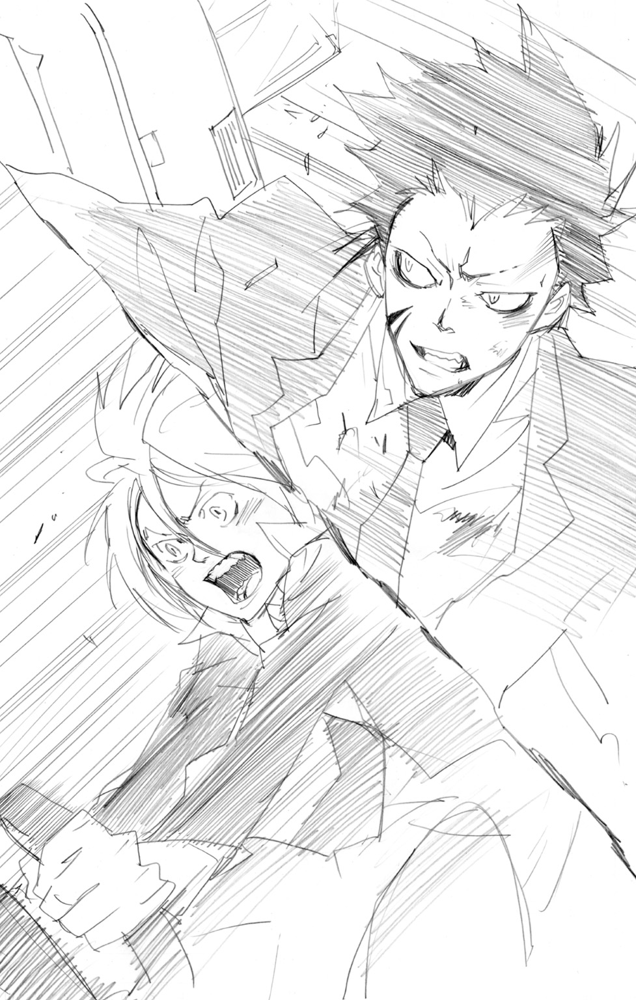
操縦桿が、力強くにぎりしめられた。
現地時間08：46――
一時コントロールを失った東京発の大型旅客機は、目的地であるローマ手前の地方空港への着陸に成功した。
機長など関係者をふくめ負傷者数名。
しかし、これだけのハプニングでありながら、死者はただの一人も出なかった。
「大惨事になるところでした......」
負傷したランチアに肩を貸しながら、たったいまあとにしたばかりの飛行機を、つかれた表情で見つめるバジル。
飛行機から降りたあと、二人はこれまでに起こったことをお互いに伝えあっていた。
「本当に爆弾があったのですか......」
「ファヴァローロが乗っていたことが幸運だったな」
「ですが、エル・エスが裏ルートで手に入れたというその爆弾を造ったのは、ファヴァローロ殿だったのでしょう！」
「そうだな。でなければ、あれほど短時間で起爆装置の解除はできなかったはずだ」
「まったく！ あのご老体はもっと反省するべきです！」
「十分反省しているさ。自分の造った爆弾で命を落としそうになったんだ」
「......そうですね。とにかく、みながこうして無事でよかったです」
「しかし、おまえが飛行機を操縦して、ここに着陸させるとはな」
「それは......親方様に飛行機の操縦も教えていただいたことがありまして......」
「そうなのか」
「もちろん、このような大型機の操縦をするのは初めてでした。うまくいったのは、ランチア殿のおかげです」
「......オレの？」
「ランチア殿の想いが、拙者を後押ししてくれたのです。でなければ、とてもみずから操縦する気にはなれなかったでしょう」
「..................」
ランチアは、やがてぽつりと、
「......皮肉だな」
「え？」
「エル・エスが飛行機を落とそうとしたのはオレがいたからだ。オレが、あれに乗りさえしなければ......」
「ランチア殿！」
しかりつけるような声とともに、ランチアを見つめるバジル。
「そのようなことをおっしゃらないでください。あなたは......なにも悪くありません」
「..................」
「ランチア殿」
まっすぐな瞳に負けたように、視線をそらすランチア。
彼のなかの、過去への想いは消えない。
しかし、それ以上のことをこの場で言う意味はないと彼は判断していた。
そんなランチアの想いをくみとったバジルは、ふたたび表情をやわらげ、
「アリサ殿にも助けられました......」
遠くを見つめるバジル。
そこでは、乗客を飛行機から降ろし終えたアリサが、仲間のＣＡにかこまれていた。
機内で見たような責める気配はまるでなく、逆に彼女たちは笑顔でアリサに話しかけている。
ハイジャック犯に立ちむかったことや、パニックになった機内で懸命に乗客たちを落ちつかせようとしたことが、仲間に認められるきっかけとなったのだろう。
（もう大丈夫ですね......アリサ殿）
バジルの口もとが、やさしくほころぶ。
アリサは、これからきっと、あきらめることなく自分の夢にむかって歩いてくれる――
バジルには、そう思えた。
「......行くか」
「はい」
ランチアの言葉にうなずくバジル。
裏社会に生きる二人にとって、表の人々と深くかかわるのは望ましいことではない。
事件の処理は、すでに仲間たちにまかせてある。
あとは――ただ去りゆくのみ。
「さらばです......アリサ殿」
ランチアをささえながら、バジルは青空の下を歩きだした。
メローネ基地――
並盛町の地下深く、ひそかに建造されたこの施設は、急激に勢力を拡大した新興マフィア・ミルフィオーレファミリーの、日本における活動拠点だった。
「んー......」
さまざまな生活配線がむきだしになった無機質な通路を、スパナはむずかしい顔をしながら歩いていた。
「んー......」
さらさらした髪をかきあげながら、何度目かわからないうなり声をもらすスパナ。いつもくわえているキャンディが、口の中でガリッとくだけた。
「どこいったかな......ウチの〝アレ〟は」
メローネ基地・司令室。
ここは、広大な地下基地の中枢であり、警備システムサーバーによって24時間体制で基地の内部を監視できる場所だ。
「..................」
先日、メローネ基地のトップに立ち、指揮系統をすべて自分の下におくことを宣言したばかりのミルフィオーレファミリー幹部――
第２ローザ隊隊長・入江正一は、きびしい視線をモニターにむけていた。
やわらかな髪とメガネの下の童顔は、彼をいつも実際の年齢より幼く見せる。
しかし、静かな迫力をにじませて立ついまの姿は、ミルフィオーレのボス・白蘭の片腕にふさわしい十分な風格を感じさせた。
「おかしな動きを見せている者はいないな」
「はい、いまのところは」
正一の問いかけに、モニターの前に座っていた部下がこたえる。
基地の総責任者として、正一はいま誰よりも気をぬけない立場にあった。
この数日、たてつづけに起こった事件――
ミルフィオーレの誇るＡランク戦士『６弔花』の二人、γとグロ・キシニアの敗北。
術者・六道骸による白蘭の暗殺未遂。
敵対組織ボンゴレファミリーがしかけるという反攻作戦の情報。
どれをとっても、ミルフィオーレをゆるがしかねない大きな事件だ。
そんな状況にあってなお、ミルフィオーレというファミリーは一つにまとまっているとはいえない。
もともと、ジェッソとジッリョネロという別々の組織だったミルフィオーレファミリーは、いまもホワイトスペルとブラックスペルにわかれて、反目しあっている。
正一がとつぜん指揮をとることになった今回の件にも不満をいだく者は多く、外からの攻撃以上に、内部の反乱を警戒しなくてはならないというありさまだ。
「ふぅ......」
かすかなため息とともに、おなかをおさえる正一。
考えれば考えるほど、神経質な彼はすぐにおなかの調子を悪くしてしまう。
（慎重にいかなくちゃいけない。いまが一番むずかしいときなんだ。このまま......このままの状態でボンゴレと戦わなくちゃ......）
唇が、きりりとかみしめられる。
それは、ゆるぎない決意。白蘭をふくめ、ミルフィオーレの誰にも知られていないはずの、正一の本当の目的のために――
「おや」
部下がもらした不審の声に、正一はすばやく姿勢を正した。
「どうした？」
「それが......これをご覧ください、入江様」
部下の前のモニターを見る正一。そこにうつしだされていたのは、
「これは......」
通路をふらふらと落ちつきなく歩くツナギ姿の青年。
それは、正一もよく知っている人物――ブラックスペルに所属するＢランクの技術者・スパナだった。
「めずらしいな。あの男が自分の工房を離れるなんて」
スパナは、ミルフィオーレのメカニックとして、最新式の人型兵器ストゥラオ・モスカをはじめとした機械兵器の整備全般にかかわっている。
研究にしか興味のない彼が、基地の中を用もなく出歩くことはほとんどない。
「スパナは、どこにむかっているんだ」
「この方向ですと......第３アフェランドラ隊の待機エリアになります」
「......っ」
正一が、かすかに息をのむ。
第３アフェランドラ隊の隊長であるブラックスペルのγは、ホワイトスペルの正一が基地の司令をつとめることに真っ先に反対の意思を見せた人物だ。
「......このまま監視をつづけてくれ」
指でメガネを押しあげながら、正一はモニターにするどい視線をそそいだ。
× × ×
ミルフィオーレ第３アフェランドラ隊隊長――
電光のγは、自室のベッドの上で、その小さな〝異変〟を感じとっていた。
「..................」
額に、じっとりと汗がにじむ。
いつ命をうばわれてもおかしくない裏社会を生きる者として、彼はいかなるときも......もちろん眠っているときでも、警戒をゆるめたことはなかった。
そんな彼は、いま、はっきりと感じていた。
自分のそばでうごめく......なにかの気配を――
「............誰だ......」
まどろみのなかにあったγの意識が、一気に現実へうかびあがる。
「オレの......他人様の部屋でなにしてやがんだ、ああンッ!?」
ガバッ！
荒々しい叫び声とともに、γは勢いよく身体を起こした。
「っ......？」
なにか硬いものの落ちる音がひびいた。
目覚めたばかりでまだ頭がぼうっとするなか、γは手探りで部屋の明かりをつける。
と、そこへ、
「γアニキ！」
心配するような声とともに小柄な人影――アフェランドラ隊の隊員・野猿が部屋に飛びこんできた。
γは、そんな野猿に機嫌の悪そうな目をむけ、
「野猿、おまえかぁ？ オレに楽しいイタズラをしてくれたのは」
「え？」
「ちょっと......こっちに来いよ」
おだやかながらドスのきいた声に、野猿はあわてて、
「なっ、なに言ってんだよ、！ イタズラとか、オイラ、なにも知らねーって！」
「ほら、早く来な。たっぷり、おしおきしてやるからさ」
「ほ、ほほ、本当に知らね――って！ オイラはただ、アニキが大声出すのが聞こえたから、それで心配になって......」
「野猿の言うとおりだぜ、アニキ」
がっしりした大きな手が、野猿をかばうように肩におかれる。
「太猿アニキ......」
うしろをふりかえり、ホッとした顔になる野猿。
そこにいたのは、大きな身体をしたアフェランドラ隊隊員・太猿だった。
「野猿はずっとオレといたんだ。アニキになにかしたってのは言いがかりだぜ」
「......チッ」
がりがりと頭をかきながら、ベッドのまわりを見渡すγ。特に変わったところのない自分の部屋を見て、ぽつりと、
「気のせいってことかぁ？ ったく」
「......アニキ？」
「なんでもねーよ。それより、服貸しな」
「ほら」
手渡された黒い服をつかみ、γはいつものようにそれに袖を通した。
そして、
「..................おい」
「なんだ？」
「『なんだ』じゃねーよ、『なんだ』じゃ」
落ちついたと思ったγの口調が、ふたたびイラついたものに変わる。
「なんで、おまえがここにいるんだ？ んー」
γがむけた視線の先。いつ入ってきたのか野猿と太猿の横に立っていたのは――
「......なんで？」
表情を変えないまま、スパナはくわえたキャンディの棒を口の中で転がした。
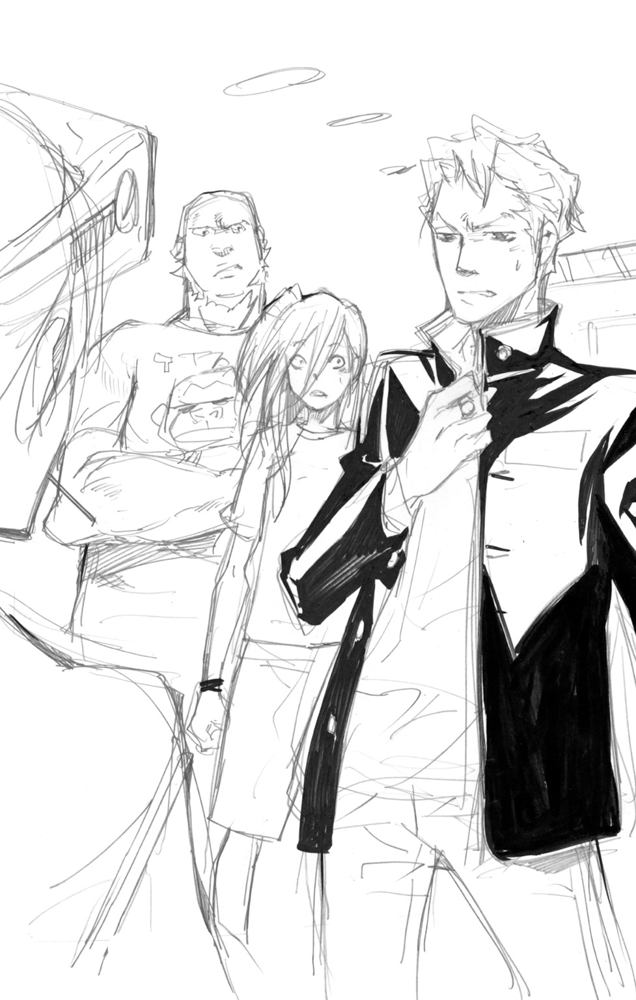
「あんたが服を貸せって言ったから」
「そういうことを聞いてんじゃねーんだよなぁ。つか、なんだこの服は？」
ミルフィオーレの一員であることを示すジャケット。ブラックスペルとよばれる武闘派に属するγたちは、いつも黒いものを着用している。
しかし、いまγが身にまとっているのは、色は同じ黒でも――
「学ラン」
なんでもないというように、あっさり言ってのけるスパナ。
「......ガクラン？」
「日本でよく着られてる服だ。長期間の使用を前提にデザインされていて、耐久性があるし汚れにも強い」
「あー、そーかそーか。で、どーゆーわけでこんなモン持ってる？」
「地上のショッピングモールで買った。ウチは日本のものが好きだからな」
スパナだけが特別ではない。
マフィアには、なぜかかなりの数の日本好きがいる。
そのなかには、いまだに日本ではタライで洗濯すると誤解している者もいるが、最先端の技術者であるスパナは、比較的正しく日本を理解しているほうだ。
......でありながら、γに渡した学ランの名札には『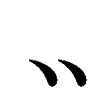甘馬』と書かれていたりするのだが。
「日本はすばらしい。日本のものは、すべておだやかななかに熱いものを秘めている。神秘的な香りをただよわせながら、飲むとアツアツの緑茶。美しい白と青のコントラストを描きながら、内側に熱いマグマを秘めた富士山。そして、日本出身のボンゴレ10代目。クールなところから一気に燃えあがるそのパワーは、爆発にたとえるのがふさわしい。爆発こそが、日本の本質の一つだとウチは思ってる」
「........................」
たんたんと変わらないペースで話すスパナを前に、γはやれやれと頭をふった。
「太猿」
「ああ」
弟分である太猿は、彼の気もちを察してすぐに行動にうつした。
「ん？」
猫のようにつまみあげられ、表情にとぼしいスパナの目がちょっぴり丸くなる。
「適当に捨ててきな。しばらくオレの視界に入らないとこにな」
「んー......捨てられるのはこまる」
「知るか」
そう言い捨てると、γはちゃんとした着替えを見つけるため奥の部屋に消えていった。
「バッカだよなー。寝起きのアニキはいつも機嫌わりーんだぜ」
さっきまで自分が怒りをぶつけられていたことも忘れ、からかうようにスパナのまわりを回ってみせる野猿。
そんな野猿を、兄貴分の太猿がたしなめる。
「ちょろちょろするな。いま、こいつを捨ててくるんだからな」
「うーい」
「待て待て。ウチはあんたらに聞きたいことがあって来た」
「聞きたいこと？」
太猿と野猿の声がハモる。
スパナは、つまみあげられたままの体勢でコクリとうなずき、
「あんたら、ウチのモスカを見なかったか？」
「モスカだと？」
「まさか、逃げだしでもしたのかよ？」
コクリ。ふたたびうなずくスパナ。
「自動操縦モードの試験中に、ちょっと目をはなしたら姿が見えなくなってな。現在位置を知らせる装置もまだ組みこんでなかったから、正直かなりこまってる」
「おいおい......」
頭をかきながら、太猿があきれたような声をもらす。
「あんなデカいのがうろついてたら、すぐに知らせが行くだろうが」
「でかくはない」
「なに？」
「ウチが試験的に造った最新型だ。サイズはストゥラオ・モスカの約15分の１」
「ミニモスカってことかぁ？」
興味を持ったのか、かすかに身を乗りだす野猿。
スパナは、それにこたえるように、
「ただちいさくしただけじゃない。その最新型モスカは、ウチが日本で学んだことをつめこんだ日本文化の結晶といっていいスペックだ」
「日本文化の結晶......？」
「そう、日本文化の結晶だ。つまりは......」
「おしゃべりはそこまでだ」
太猿が、二人の会話をさえぎる。
「アニキがもどってきて、まだおまえがいるのを見られたら、こっちまで半殺しの目にあうからな」
「けど、ウチのモスカが......」
「見つけたら知らせてやる。行くぞ」
それ以上スパナがなにか言おうとするのを無視し、太猿は彼を部屋の外につれだしていった。
「..................」
その場に、一人残された野猿。彼は、なにか気にかかるという顔で首をひねった。
「日本文化の......結晶？ それって......」
「行ったか。スパナの野郎は」
そこへ、いつもの黒いジャケットに着替えたγがもどってきた。
「ん？ なにシケた顔してんだ、野猿」
「アニキ......実はスパナのやつ......」
野猿は、スパナから聞いた話を、そのままγに語って聞かせた。
事情を聞いたγは、納得したという顔で、
「......なるほどな。で、その逃げたモスカをさがしてオレの部屋に」
そうつぶやいて、γはハッとした顔になる。
戦闘用のモスカとはまったくちがうという小型のモスカ。
ひょっとしたら、さっきγの眠りを邪魔してくれたのはその――
「......野猿。ちょっと、そこらへんさがしてみな」
「さがす？ さがすって何を......」
「おまえがいま言っただろーが。スパナの造ったっていうミニモスカ......」
「ええ―――っ！！！」
おどろきの声が、部屋中にこだました。
「ア、アニキ、それって......」
「......っせーぞ、野猿。なんだっつーんだよ」
「いや......その......」
野猿は、ずっと引っかかっていた。
日本文化について、熱心に語っていたスパナ。
彼は、こう言っていた。
おだやかなところから熱く燃えあがる日本のパワーは――
爆発――だと。
「まさか......ウソだろ......」
「なに、ブツブツ言ってやがる。早くそのモスカってのを......」
「......アニキ」
「あ？」
「オイラの言うことを......落ちついて聞いてくれよ」
「おい、野猿。おまえ、さっきから何わけのわかんねーこと......」
「ミニモスカには、爆弾がつんであるんだよ！」
「！」
衝撃の告白に、γは大きく息をのんだ。
「......おいおい......おまえ、それ、マジで言って」
「マジだって！ スパナのやつならやりかねねーだろ！」
「..................」
あせる野猿に対し、γはそれを否定する材料が見つけられない。
ミルフィオーレファミリーのなかでも、まちがいなく一、二を争うマッドな技術者であるスパナ。
彼は自分の興味のためなら手段をえらばないところがあり、敵対マフィアであるボンゴレファミリーの10代目に興味があるとも、平気で言ってのける。
危険な兵器を造ることにも、当然ためらいはなく――
しかも、それがこの基地のどこかに逃げだしたということになれば――
「......野猿」
「わかってるって、アニキ！」
野猿は、すでにγの部屋の大捜索にとりかかっていた。
γはさらにイライラした顔で頭をかき、
「ったく、シャレにならんマネしてくれるぜ、あのガキぃ......」
「？ なにをしてる、野猿」
スパナを捨てて帰ってきた太猿が、夢中で部屋の中をかきまわす弟分を見て、ちいさく首をかしげた。
そんな太猿にγは、
「ちょうどいいところに来たな。おまえも野猿を手伝えよ」
「γアニキ......？」
「説明してほしーか？ いいから、オレの言うこと聞きな。これ以上、オレをイラつかせたくなかったらな」
「あ、ああ......」
口もとに笑みをうかべながらも、まったく笑っていないγの目を見て、太猿はおとなしく彼の指示にしたがう。
「............ったく」
自分の部屋に、爆弾をつんだモスカがいるかもしれない。
そんな事態に直面したγは、しかし恐怖やあせりを感じるより先に、面倒なことにまきこまれたと強く感じていた。
「いったいどういうつもりなんだ、スパナは」
モニターを見ながら、正一はまた自分のおなかをおさえていた。
基地内のほとんどの場所をうつしだせる監視モニターだが、幹部クラスの個人の部屋については、プライバシーの要望があって対応していない。
さらに、送られてくるのは映像のみで、音声もわからない。
スパナがγの部屋でなにをしていたのか――完全に不明というわけだ。
（部屋を追いだされたようだし、反乱とかの相談じゃないみたいだけど......そのあとが問題なんだよな......）
腕を組み、トントンとつま先で床をたたく正一。
スパナがγの部屋からつまみだされたあとも、監視はつづけられていた。
そして、10分後――
正一たちが監視しているなか、スパナはおどろくべき行動をとった。
（あんなことをしたら、どうなるかわかってるだろうに......いや、あいつはわかっていないのか？ とにかく、ボンゴレの総攻撃がはじまる前に、この基地がおかしなことになったら、僕の計画が......）
「どうしましょうか、入江様？」
「っ！」
部下からの問いかけに、思わず身体をこわばらせる正一。
「..................」
心の中だけで思っていたことがバレるはずはない。これ以上、おかしな態度をとって疑いを持たれてはいけない――自分に強く言い聞かせ、正一はいつもの表情をとりもどす。
「なにか対応をしたほうがよろしいのでは？ このままでは、スパナ氏が......」
「ちょっと待って。いま考えるから」
なるべく自然な感じをよそおい、正一は部下から目をそらした。
× × ×
しぱぁぁぁぁんッ！
「......っ！」
スパナの顔が、苦痛にゆがんだ。
「ほらほらほらッ！」
先端が複数にわかれたムチが、容赦なくふるわれる。
壁に固定してある手錠につながれたスパナに、それを避ける方法はない。
第12カメリア隊の『戦闘実験室』とよばれるコンクリートむきだしの広い部屋。ここで彼は、拷問のような仕打ちを受けていた。
「う......」
相変わらずの無表情ながら、スパナの口からはダメージがあることをうかがわせるうめき声がもれる。
「......痛いな」
「そりゃ、痛いだろーさ。痛くなるようにやってるんだからね」
そう言って、手にしたムチでスパナのあごをくいっと上向かせたのは、特徴的な髪形をした妖艶な美女だった。
妖花アイリス・ヘプバーン――
ミルフィオーレ人体覚醒部に所属していた彼女は、人間の身体のあつかい方をよく心得ている。特に、苦痛をふやすようなやり方は、お手のものだ。
「まぁ、あんたの気もちもわからなくはないよ、スパナ」
「......ウチの気もち？」
「あんたもアタイの魅力にやられた口なんだろ？ こいつらみたいにさ」
アイリスは手にしたムチで背後にならぶ部下たち――人体実験が生みだした怪物の集団である死茎隊を指し示す。
「こいつらみたいになれば、ずっとアタイのそばにいられるよ。アタイの下僕としてね」
「んー......」
表情を変えないまま、スパナは考えをめぐらせるように目を動かした。
そして一言、
「......わかった」
「そーかい、そーかい。あんたみたいなカス男でも、すぐアタイの役に立てるようにしてあげるよ。まずは、その貧弱なカラダを思いきり強化して......」
「いやいやいや」
アイリスの興奮に水をかけるように、スパナが首をふる。
「ウチがわかったって言ったのは、あんたが誤解してることがわかったって意味だ」
「......誤解？」
「モスカの強化のために、あんたの死茎隊の戦闘データには興味がある。でも、あんたそのものにはなんの興味もない」
「な......っ!?」
「いや、ちがうな。一つ興味があるのは、あんたのその髪は、なんの実験の爆発でそうなったのか......」
「ふ......ふざけんじゃないよ！」
怒りの声とともに、ムチが勢いよくふりおろされた。
「っ......！」
一瞬息も止まるほどの衝撃に、スパナの身体が大きくそりかえる。
「このアタイに興味がない？ 言ってくれるねえ。だったら、どういうわけであんなことしてくれたんだろうねえ」
「あんなこと？」
「しらじらしいねぇ。あのさ......あんた現行犯でアタイにつかまったんだよ。アタイが留守の間に、アタイの部屋に忍びこんでさ」
アイリスの目が、攻撃的な光をともしてスパナにむけられる。
「ブラックスペルのあんたが、ホワイトスペルのアタイの部屋に無断侵入なんてさぁ！ ロクでもないこと考えてるのはわかってるんだよ！」
グググ......！ アイリスのムチが大きくしなる。
「すぐに白状させてあげるよ。あんたが何をたくらんでるかね！」
「グォォォォォォォォォォォォォォォッ！！！」
たかぶるアイリスに同調し、うしろにひかえる死茎隊が獣のような叫び声をあげる。
「さぁ、くらいなァ！」
地獄の激痛をもたらすムチが、高々とふりあげられ――
バキッ！！！
「......!?」
ムチが空を切った。
ねらいをはずしたのではない。壁に拘束されて身動きできないはずのスパナが、ムチのあたる直前、倒れこむようにその場にひざをついたのだ。
「これは......」
粉々にくだけた手錠を見て、あぜんとなるアイリス。
聞こえた破壊音は一つだけ。つまり、スパナを拘束していた両手両脚の四か所の手錠が同時に破壊されたのだ。
こんな離れ業をやってのけるのは、精鋭ぞろいのミルフィオーレでもそうはいない。
「どういうつもりだい......」
死茎隊が怒りのうなり声をあげるなか、アイリスはゆっくりとうしろをふりかえる。
その視線の先......部屋の入口に立っていたのは、アイリスの所属するホワイトスペルと険悪な関係にあるブラックスペルの幹部――
「γ！」
怒りの声とともに、アイリスは足もとに転がっていたビリヤードの球を蹴りあげた。
ショットプラズマ――雷の炎をまとわせ〝硬化〟した球をうちだす強力な匣兵器。その威力の前では、鉄の手錠など紙くず同然に引き裂かれる。
「ちょっと邪魔させてもらうぜ、アイリス」
口もとに甘い笑みをうかべながら、部屋に足をふみ入れるγ。
いつ襲いかかってきてもおかしくない敵意を見せる死茎隊の前を通りすぎ、床にひざをついたスパナに歩みよる。
「ほら。世話かけてんじゃねーよ」
肩に腕をまわすと、γは細身なスパナを軽々と立ちあがらせた。
そして、アイリスにむかって、ひらひらと手をふってみせ、
「じゃあな」
「『じゃあな』じゃないんだよ！」
ぱぁんッ！ 怒りをぶつけるように、アイリスのムチが壁をうつ。
「どういうつもりだい？ アタイの楽しみの邪魔してくれちゃってさ」
「悪ィな。ちょっとこいつに用がある。済んだら返してやるよ」
「返さないでもらえると助かる......」
弱々しく抗議するスパナ。
一方のアイリスは、もちろんそんな説明で納得するはずもなく、
「ジョーダンじゃない。横から人の獲物をさらっていこうってかい？ ブラックスペルのやつにそんなことされちゃ、アタイのメンツにかかわるってもんだよ」
アイリスが荒々しくムチをならすと、うなり声をあげていた死茎隊の男たちが、野獣のような動きでγをとりかこんだ。
「......オレとやるってのかい？」
アイリスを見るγの目に、数々の修羅場をくぐりぬけた者だけが持つ光がともる。
「ここは見逃してもらえると助かるんだがなぁ、妖花アイリスさんよぉ」
「いやいや、あんたと死茎隊が戦うなら、ウチはぜひ見てみたい。モスカのパワーアップのためにいいデータが......」
「おい、スパナ」
のんきなことを言うスパナに、γの口もとがひきつる。
「あんま、なめたこと言ってんじゃねーぞ。誰のせいでこんなことになってると思ってるんだ、あぁ？」
「......誰のせい？」
「おまえのせいだろーが。おまえが爆......ヤバいモスカを逃がしたりするからよ」
爆弾と言いかけ、γはそれをギリギリでのみこむ。
ここには、ホワイトスペルのアイリスがいる。そして、スパナはブラックスペルの人間だ。大きすぎるスパナの失態は、結果としてブラック全体の立場を悪くしかねない。
「どういうことだい？ ヤバいモスカって？」
不審そうな顔のアイリスに、γはなんでもないと笑ってみせ、
「言ったままだよ。たぶん、あんたとトラブルになったのも、モスカをさがしてたからだろうさ」
「......そうなのかい？」
その問いかけに、スパナはコクリとうなずく。
「γの言うとおりだ。ウチはあんたの部屋でモスカをさがしてた。ウチの造った小型モスカは、換気口とか通ってどこにでも入りこめるからな。遠隔操作も可能だ」
「遠隔操作って......やっぱり、そういう目的なのかよ」
「そういう目的？」
「話はあとだ。邪魔したな、アイリス」
「待ちなよ」
制止され、γはうんざりという顔でふりかえる。
「まだなんかあるのかよ」
「あるよ。おおありさ。あんたらの事情はなんとなくわかった。でもねぇ......」
γの眼光に負けない光が、アイリスの目に宿る。
「それと、スパナがアタイの部屋に忍びこんだこととは、話が別だろう」
「......あのなぁ」
パンッ！ ムチの音にあわせ、グッと全身に力をこめる死茎隊。
なまめかしいアイリスの唇に、笑みがうかぶ。
「きっちり落とし前はつけてもらわないとね」
「しかたねぇな。聞きわけのない子猫ちゃんは」
戦意をみなぎらせるアイリスと死茎隊から遠ざけるように、γはかかえていたスパナをうしろ手に押しだした。
「おっと」
ふらつきながらも、なんとか倒れずにとどまるスパナ。
そんなスパナを、肩ごしにちらりと見て、
「さっさと行って、逃げたモスカをさがしてきな」
「γ......」
「機械のことはおまえにまかせる。生身の女の相手はオレの専門だ」
「..................」
「ほら、なにボーッとつっ立ってんだ。さっさと行けよ」
「いや......あんたと死茎隊がやりあうなら、ぜひともデータを......」
「いいかげんにしろよ、あぁ？」
ひたすらマイペースなスパナに、思わず殺意がめばえてしまうγ。
そして、アイリスも、ただ黙って見ているはずがなく、
「あんたら、逃がすんじゃないよ！」
「ガァァァァァァァッ！」
「......チッ！」
いっせいに飛びだした死茎隊を、γは二つ名のとおり電光のようなスピードでくい止めようとする。
しかし、四人もいる死茎隊の全員を、完全に押しとどめるのは困難だ。
「早く行け！ スパナ！」
「......わかった」
やっとのことでスパナが歩きだした......と思った瞬間、すぐに足が止まり、
「アイリス。あんたに渡したいものがある」
「渡したいもの？」
「ウチにそんなつもりはなかったが、あんたの気分を悪くしたことへの謝罪と思ってもらえればいい」
そう言って、スパナはどこからともなくとりだした〝それ〟を、アイリスにむかって投げつけた。
「......っ」
風をはらんで広がった〝それ〟が、アイリスの視界をさえぎる。
あわててつかみとったときには、すでにスパナの姿は消えていた。
「......逃げ足だけは速いねぇ」
くやしそうにつぶやいて、アイリスは手にした〝それ〟に視線を落とす。
大きな襟と長めのスカートが特徴的なそれは、日本の女子の学生服......つまりはセーラー服で――
名札には『愛入酢』と刺繡がされていた。
「すぐに戦闘を中止させるんだ！ いいか？ すぐにだぞ！」
司令室を出る部下にむかって声をはりあげると、正一はあせる気もちを持てあますようにあたりをうろついた。
「なんで、こんなことになっちゃうんだよ！ まったく！」
冷徹な仮面の奥から、かすかな幼さがにじみだす。
γとアイリス――メローネ基地の実力者同士の内輪もめは、責任者としてはもっとも避けたいアクシデントだ。
会話を聞けないため、くわしい理由までは不明だが、γがスパナをかばったことで争いになったのは正一にも推測できた。
「......っ！ そうだ、スパナだよ！ スパナを見失ってないか！」
「は、はい......」
部下が、あわててモニターを切りかえはじめる。
（こうなったら、スパナを一時拘束することも考えなくちゃな。彼が動き回ることでトラブルが起きるなら......）
「入江様！」
「今度はなんだい？」
「これをご覧ください！」
「！」
モニターに拡大された『その人物』に、正一は息をのむ。
「これって......まさか......」
「侵入者!?」
× × ×
メローネ基地は、日本の裏社会で戦うために造られた前線本部だ。
それだけに、ミルフィオーレ本部から送られてきた戦士はかなりの数にのぼる。早い時期から第３アフェランドラ隊の隊員として駐留していた野猿でも、さすがに基地にいる全員の顔と名前はおぼえていない。
しかし――
「誰だよ......おまえ」
「..................」
野猿の問いかけに、少女はおどおどと視線を落とした。
個性的なメンバーが多いミルフィオーレファミリーではあるが、それでもなおその少女の異質さはきわだっていた。
まず――年が、かなり若い。
子どもに見られがちな野猿より、さらに年下に見える。
そして、彼女が着ていたのは、ブラックスペルともホワイトスペルともちがって野猿が初めて見る制服――
「誰だって、聞いてんだろ！」
感情のまま、大声をはりあげる野猿。
実際、彼はイラだっていた。
太猿とγの部屋の中をさがした結果、小型モスカらしきものは見つからなかった。
しかし、それで安心というわけにはいかず、メローネ基地の内部で危険なモスカが暴走ということになれば、幹部であるγの責任も問われかねない。
そのため野猿は、γたちと手分けをして、基地の中を捜索していたのだ。
その途中――
足をふみ入れた医療エリアで、彼はいま目の前にいるこの少女と出くわした。
いそいでいるところだが、さすがに不審者の存在は見過ごせない。
「............ろ」
野猿の剣幕におびえるようにして、少女がなにかをつぶやいた。
「はぁ？ もっと大きな声出せよ。ごまかしてんじゃねーぞ」
「........................」
うつむいていた少女が、勇気をふりしぼるように大きく息を吸う。
そして、はっきりとした声で、
「クローム......髑髏」
「......？」
クローム髑髏――
おかしな名前だというのが、聞いた直後の野猿の感想だった。
「......で、どこの何者なんだよ、てめーは？」
「......しゅごしゃ」
「はぁ？」
「ボンゴレファミリーの......霧の......守護者......」
「！」
野猿の目が、これ以上ないほど見開かれる。
ボンゴレファミリーの守護者!?
それは、自分たちの最大の敵といっていい存在――
「て......てめえっ！」
思いがけない状況にあせる野猿だったが、次にとった行動はすばやいものだった。
慣れた手つきで匣をとりだし、開匣して愛用の武器である黒鎌を出現させる。
「ショアッ！」
気合とともに刃をくりだす野猿。
しかし、医療エリアのせまい通路では思うように鎌をふるえず、いたずらに周囲の観葉植物や医療器具をなぎたおしてしまう。
突然はじまったバトルに、まわりから悲鳴があがる。
だが、野猿は攻撃をやめようとせず、足がもつれて転んだクロームにせまった。
「これで終わりだぜぇっ！」
あぜんとしているクロームの頭をめがけ、凶暴な刃がふりおろされる。
死ぬ気の炎で強化された避けようのない一撃。
――が、
「っ!?」
クロームが笑った。
あどけない少女の顔からは想像できない邪悪な笑みを見て、一瞬、鎌をふるう野猿の動きがにぶる。
ズル......ぅぅぅリッ！
クロームが消えた。いや、消えたのではない。
ガクンと大きくひざを折り、上体をはげしくそらした体勢で、すべるようにななめうしろに移動したのだ。
それは、人体の常識をこえた不気味な動きだった。
「な......っ！」
あやしい笑みをうかべたまま、クロームが逃げていく。
壁から天井、そしてふたたび床と、まるで風の中をくるくる舞う木の葉のように。
「な、なんなんだよ、おまえっ！」
さすがに動揺を隠しきれない野猿だったが、それでも戦士としてのプライドが彼に攻撃をつづけさせる。
息もつかせぬ連続攻撃。しかし、不気味な少女はすべてを笑いながらかわした。
「甘い甘いバァ♪」
「こ、このっ！ こいつっ！」
「ねぇねぇ、まだ気づかないの？」
「ハァハァ......なにが......」
「フフッ♪」
バサッ！
大きな音を立てて、黒いマントがひるがえる。
「あ......！」
おどろきに目を見開く野猿。
そこに、あのおどおどした少女の姿はなかった。
「おまえ......ジンジャー・ブレッド！」
「せいかい♪ バァ♪」
そう言って、楽しそうにその場でくるりと回ってみせたのは、とんがり帽子にマントというまるで魔法使いのような人物――第８グリチネ隊副隊長・魔導師の人形ジンジャー・ブレッドだった。
自分がジンジャーにもてあそばれたと知った野猿は、たちまち怒りを爆発させる。
「て、てめー、このホワイトスペル野郎ッ！ どーゆーつもりだよ！」
「どーゆーつもりもなにも......」
ふたたびマントがひるがえり、魔法使いの少年がおどおどした少女へと変わる。
少女は、またぺろっと舌を出し、
「こーゆーつもり」
「！！！」
ブチッ！ 完全にキレてしまう野猿。
荒くれ者と評判の第３アフェランドラ隊の一員である野猿だ。なめられるようなことをされて黙ってはいられない。
「許さねー！ 許さねーぞ！ このヤローがぁぁッ！！！」
「きゃ♪」
わざとらしい悲鳴をあげて逃げだすクローム姿のジンジャー。
頭に血ののぼった野猿は、まわりのケガ人や看護師たちも目に入らず、ジンジャーにむかってまっしぐらに突進する。
「フン、フフフン♪」
そんな野猿の猛攻を、ジンジャーは鼻歌まじりにひらひらと避ける。
野猿は、ますます頭に血をのぼらせ、
「フラフラ逃げてんじゃねーっ！ オイラに狩られろってよぉ！」
「ほらほら、こっちこっち♪」
まるで、鬼ごっこを楽しむように逃げつづけるジンジャー。
清掃のゆきとどいた通路を走りぬけ、第８グリチネ隊のエンブレムが扉にかかげられた病室へとすべりこむ。
「ンなところに隠れたってムダなんだよぉっ！」
ジンジャーを追って病室に入った野猿は、すかさず黒鎌を勢いよくふりおろした。
「ショアッ！」
ボウッ！ 病室の中を目がけて、黒鎌から真っ赤な炎がほとばしり――
ドゴォォォォォォォォォォォォォォッ！！！
衝撃が爆風となって、部屋の中を荒れ狂った。
「ヘヘヘッ！ ざまー見やがれ！」
グッとポーズを決める野猿。
が、
「!?」
爆炎の晴れたむこうにジンジャーの姿はなかった。
ムチャクチャになった病室内......破壊されたベッドの上でピクピクとけいれんしていたのは、全身を包帯でぐるぐる巻きにされた長髪の男だった。
「やっべ......」
野猿の顔が、かすかに青ざめる。
その長髪とメガネには見覚えがあった。第８グリチネ隊の隊長にして、ミルフィオーレのＡランク幹部であるグロ・キシニアだ。
野猿は思いだす。戦闘で重傷を負ったグロが、医療エリアで治療中だったことを。
「うっわー......どうすっかな。オイラがとどめ刺しちゃったカンジだよな、これ」
野猿がそうつぶやいた直後、包帯だらけのグロが、はげしく怒りを爆発させた。
（なにがとどめを刺しただ、このブラックスペルの子ザル、子ザル、子ザルがぁぁっ！ 貴様らとは格のちがうこのグロ様がこの程度のこの程度のこの程度の――――――っ！）
しかし、あごをくだかれているグロの叫びはまったく声にならず、ただこめかみの血管がピキピキピキピキッと高速で動いた。
「なんか......元気みてーだな」
あぜんとしつつも、ホッとした息をもらす野猿。
「これなら、だいじょーぶかな。うう......でも、γアニキに知られたら、やっぱり怒られそーだよな。ハァ......どーすっかなー」
「ホーント♪ どーしよっかなー♪」
「！」
肩ごしにニュッとクローム（の姿をしたジンジャー）の顔が出てきて、野猿はギョッと目を見張る。
「て、てめー！ いつの間に!?」
「こまっちゃうな、うちの隊長にこんなことしてくれちゃって」
そう言いつつ、まったくこまっていないような調子で、ジンジャーは黒こげのグロに近づいていく。
「だいじょ～ぶですかぁ、グロたいちょ♪」
「！！！」
グロの腕をとった瞬間、ジンジャーは乱暴にそれをひねりあげた。
とつぜんの激痛に、声にならない悲鳴があがる。
「こっちはどうですか～？ こっちは？ こっちもチェックしないとね♪」
「！！！ ！！！！！！」
たてつづけに身体の各部をたたいたり、つねったり、折り曲げられたりされ、グロは陸にあげられた魚のようにはねまわった。
「うわ......」
さっきまでの怒りも忘れ、野猿はげんなりした顔になる。
第８グリチネ隊の隊長であるグロは、その変態じみた言動で、部下たちからかなり嫌われていたらしい。行動不能となったグロに対し、副隊長のジンジャーがここぞとばかりに仕返ししてもおかしくはないというか――
「うう......」
それはつまり、野猿も仕返しのために利用されたということで......ひょっとしたら、クローム髑髏という少女の姿をしているのも――
「フフフッ、うれしいでしょ、隊長。こんなキレイな女の子にお世話されて」
「！ ！！！！」
「あっ、ひょっとして隊長は子どものクロームじゃなくて、もっと熟した年上のクロームがよかった？ でも、隊長がやられたのは子どものクロームにだしね♪」
「！！！！！！！！！ ！！！！！！！！！！！！！！！」
最低だ――
身体と精神の両方から徹底的に上司をいたぶるジンジャーを見て、野猿は完全にヒイてしまう。
「よくあんなことできるよな......いくらヒドい目にあわされてるからってさ。もし、オイラがアニキにあんなことしたら......」
「したいのか？」
「い、いやっ、するしない以前にできるわけねーだろ。アニキはグロみてーなマヌケメガネじゃねーんだ」
「スキならつくれるだろう。あいつの飲む酒に一服もるとかな」
「あっ、そーか......って、『そーか』じゃねーよ！ だいたい、アニキはグロとちがってオイラたちにヒデーことなんか......」
「しないのか？」
「機嫌の悪いときはちょっぴり......いや、かなり......いやいや、つーか、正直メチャはげしく......」
あんなことできるジンジャーがちょっとうらやましいかも......などと、ついつい思ってしまった瞬間、
「！」
野猿はハッとなって、いつの間にか自分の横に立っていた人物に顔をむける。
「スパナ！」
「ん」
あせる野猿と対照的に、スパナはのんきな無表情のまま手をあげてみせた。
「てっ......てめー、こんなとこにいやがったのかよ！ つか、逃がしたモスカは見つかったのか！」
ふるふるっ、と首を横にふるスパナ。
「ウチのモスカをさがしてたら、ここの看護師によびとめられてな。こうして手当てされてたんだ」
よく見ると、スパナのツナギの胸もとから包帯がのぞいている。
野猿は、スパナがアイリスに痛めつけられたことを知らなかったが、それでも彼がなにかトラブルをよびよせたことはすぐに想像できた。
「ったく、なにグズグズしてんだよ。さっさとそのモスカを見つけろよな」
「？ なんで、あんたがそんなことを言う」
「なんでって......その最新型のモスカって、かなりヤバいシロモノなんだろ」
「......そうだな。日本的に言うと、かなりヤバい」
「日本的もイタリア的もねーだろーが！」
「自動タイマーもついていて、使いやすさには自信がある」
「自信持つなっつーの！ タイマーとか、もう、まんま危険物じゃねーか！」
「......？」
「ったく......てめーがγアニキのとこに来なかったら、オレもこんなめんどくせーことを......」
「ああ」
スパナが、やっと話がわかったというようにポンと手をたたいた。
そして、野猿の目の前にとりだしてみせたのは、
「......なんだよ、これ？」
「学ラン。さっきγに渡したのと同じ......」
「そんなことはわかってるんだよ！ じゃなくて」
「だって、そうなんだろ。あんたも学ランがほしくて、だからウチを追いかけてきたと」
「ぜんぜん、ちげ――――って！」
渡された学ランをにぎりしめ、絶叫する野猿。
と、
「なになに？ なにをそっちでもりあがってるの？」
グロをお世話（？）していたジンジャーが、突然あらわれたスパナに興味を持って話しかけてくる。
「......？ あんたは」
「こいつ、ジンジャーだよ。敵に変装するなんてシュミ悪ぃーぜ」
「ああ、ジンジャー・ブレッドの人形か」
納得したようにつぶやいて、スパナはさらに二着の学ランをとりだす。
「安心しろ。あんたたちの分もある」
「いや、求めてねーから......」
野猿が、つかれたような声をもらす。
「つか、いったい何着もってるんだよ、おまえ」
「一着では意味がないからな」
「はぁ？」
「これも日本の文化だ。理解には実践が一番だろう」
「？ ？」
相変わらず何を言ってるかわからないスパナに、首をひねる野猿。
そして、『神社ー』と刺繡された学ランを渡されたジンジャーは、
「あはっ♪ なんだか、おもしろい服だな。隊長にも着せてあげないと」
「！ ！！！」
もう一着の『黒』と名前の入った学ランを手に、悪魔の笑顔でグロに近づいていくジンジャー。
「さぁ、お着替えさせてあげましょーね♪」
「！！！！ ！！！！！！！！！！」
「またはじまったよ......」
げっそりとつぶやく野猿。
が、すぐ我にかえり、
「そーだそーだ、そんな場合じゃねーって！ おい、スパ......」
逃げたモスカのことを聞こうとしてふりかえったものの、ほんのちょっと目をはなした間にもうスパナはいなくなっていた。
「あいつ......いーかげんにしろよなぁっ！」
まだ近くにいるはずと、あわてて部屋を飛びだした瞬間、
「わっ！」
医療エリアの職員らしき男たちが、野猿の前に立ちはだかった。
「第３アフェランドラ隊の野猿殿ですね。これはいったい何があったのですか？」
「これって......あっ」
自分がボロボロにした病室をふりかえって、しまったという顔になる野猿。
こんな派手なことをしては、さわぎになるのが当たり前だ。むしろ、警備の人間が来るのが遅すぎたといえる。
「治療器具の事故ですか？ それとも敵の攻撃で？」
「いや、それは......オ、オイラが知るわけねーだろ！」
逆ギレ気味に言って、野猿はその場を切り抜けようとする。
が、
「そこの野猿くんでーす。この病室に匣兵器を撃ちこんだのは」
「っ！ ジンジャー、てめ―――っ！」
あっさりチクられて、ふたたび野猿の怒りに火がつく。
「だいたい、てめーがチョロチョロ逃げたりするから、それで......」
「本当なのですか、野猿殿？」
「え？ だ、だから、悪いのはオイラじゃなくてあいつが......」
「医療エリアで破壊行為など前代未聞ですぞ。これは、隊長のγ殿にも抗議をさせていただかないと」
「アニキに!?」
野猿の顔が、一瞬で真っ青になる。
「それだけはやめてくれよ――――――――――っ！！！」
悲痛な絶叫が、白煙ただよう病室にひびいていった。
「もう......いいかげんにしてくれよ......」
ぐったりした顔で、正一は司令室の椅子にしずみこんだ。
謎の侵入者の正体は、ホワイトスペルのジンジャーだった。ブラックスペルだけでなくホワイトまでいっしょになってこちらの気苦労をふやしてくれるなんて......最悪としか言いようがない。
「あの、入江様......スパナの追跡は......」
「続行だよ、続行！ やめてなんて言ってないでしょ！」
やつあたり気味に言って、正一は必死に考えをめぐらせはじめる。
スパナの行くところで次々とさわぎが起こる......これは偶然なのか？
それとも、やはり正一や上層部に対して反乱をくわだてているということなのか？ γたちが動いているのもそれに関係して――
「入江様！」
「......今度は、どうしたの？」
「アイリスとγの争いを止めにむかった者からの報告です。彼らが到着する前にすでにγは逃亡したとのことで......」
γからも、事情を聞かなくてはならない。新たな予定が、即決定事項となって正一の脳内に書きこまれる。
「それと、医療エリアで破壊行為を行った野猿ですが」
「彼のことはあと回しだよ。まずは上にいる人間のほうをなんとかしないと」
「ジンジャー・ブレッドのことは」
「それもあとで！ わかってるでしょ！」
「あと......」
「まだなにかあるの？ だから、たいしたことのない用件はいま......」
『ごきげんななめだね』
「そうだよ、ごきげんななめだよ！ でも、これが僕の仕事なんだ！ 僕が直接やるってあの人に言ったんだからね！ 僕があの人............に......」
投げやりな言葉が、途中から急速にいきおいをなくす。
『ハロー、正チャン』
「！」
とびはねるように椅子から立ちあがる正一。
外部通信用スクリーンに大きくうつしだされていたのは、いつでもニコニコと笑みを絶やさないミルフィオーレファミリーのボス――
「び......白蘭サン！」
× × ×
「助かるぜ。あんたに手を貸してもらえるなんてな」
そう言って、太猿は、ゴツい顔に男らしい笑みをうかべてみせた。
１時間前――
スパナが逃がしたモスカの危険性についてγたちから聞かされた太猿は、あわてて彼を放りだした場所にもどった。
しかし、すでにスパナの姿はなく、それから彼はγや野猿と手分けして、広いメローネ基地の中をずっとさがしまわっていた。
そんななか、様子のおかしい太猿に気づき〝彼〟が声をかけてきたのだ。
「みずくさいことを言うな、太猿」
がっしりとした手が、太猿の肩にのせられる。
第９ジラソーレ隊所属ニゲラ・ベアバンクル。太猿に負けず大柄で筋肉質な彼は、鬼熊使いの異名を持ち、ミルフィオーレでも指折りの戦士だ。
同じブラックスペルであり、ジッリョネロファミリーの仲間でもあったニゲラ。
γたちと気心の知れている彼は、太猿から事情を聞くとこころよく協力を申しでてくれたのだ。
「ニゲラ。あんた、スパナの行きそうな場所に心当たりはないか？」
「そうだな......やつは昔から機械いじりにしか興味がない。十中八九、工房にこもってると言いたいところだが、いまは逃げた小型モスカをさがしているんだろう。はっきり言って、見当をつけるのは無理だな」
「手当たり次第しかないってわけかよ」
「基地のほかの者にも話して協力を頼むことは......」
「やめてくれ、ニゲラ。まだ、はっきりしたことをスパナの口から聞いてねぇんだ。ヘタにおおごとになったら、うちのアニキが恥をかく」
「......そうだな」
険悪な関係のブラックスペルとホワイトスペル。たがいに、スキを見せたくないという思いは強い。
「γアニキを......これ以上......」
「あまり、肩に力を入れるな。おまえの気もちはわかるがな」
ポンと太猿の広い背中をたたき、ニゲラはその場から歩きだした。
「とにかく、スパナを見つけないことにははじまらん。先にその危険なモスカらしきものを見つけたとしても、機械にくわしくないオレたちには手の出しようがないからな」
「ああ......そうだな」
あせる気もちをじっとおさえ、太猿もスパナをさがそうと動きはじめる。
と、そのとき、
ドウッ！！！
「！」
すぐ近くで聞こえた爆音。
どちらからともなくうなずくと、二人は音の聞こえたほうへ走りだす。
「ハハハハハハハハハハァッ！」
「っ......」
大きな扉のむこうから聞こえた調子はずれな笑い声に、太猿とニゲラはハッと動きを止めた。
「......やつか」
「だろうな」
太猿は緊張をとくと、『第二格納庫』と書かれた部屋の扉を乱暴に開け放った。
「おまえか、デンドロぉっ！」
広い格納庫に、太猿の怒声がひびきわたる。
それに反応して、部屋の中にいた一人の男がふりかえった。
「んあ？」
太猿やニゲラにも見おとりしないほどの、これまた大きな男だった。もりあがった筋肉の量でいえば二人より上かもしれない。
デンドロ・キラム。
ミルフィオーレの『一番槍』の異名を持つ切りこみ重装兵。
誰よりも先に敵に突撃する勇敢な戦士――といえば聞こえはいいが、要はそればかりを好むという単純な男だ。
「また、やってやがったのか......」
あきれた目で、デンドロが手にした大砲のような武器を見る太猿。
デンドロには、気晴らしに武器を試しうちするという悪い癖があり、その件で彼は何度も上から注意を受けていた。
「なんだぁ、太猿。このデンドロ様に文句でもあるってのかぁ？」
ドスドスと足をならして歩み寄り、見下すような視線をむけるデンドロ。
そんなデンドロの目を、太猿はまっすぐにらみかえし、
「別に文句なんかねぇよ。ったく、ややこしいことしやがって」
「ハハぁ？ なんだ、その態度ぉ？ 気に入らねーなぁ」
デンドロは、ミルフィオーレの荒くれ者たちのなかでも、輪をかけてケンカと暴力が大好きという男だ。
太猿は、面倒くさそうに顔をしかめ、
「こっちは用があるんだ。おまえの相手なんかしてるヒマはねーよ」
「〝なんか〟だとぉ？ てめー、このデンドロ様のことナメてやがるな！ 思い知らせてやるぞ、この......」
「それくらいにしろ」
二人の巨漢の間に、ニゲラが大きな身体を割りこませる。
「太猿の言うとおり、オレたちはいま急いでいるんだ」
「知ったことか、そんなことぉ！ あぁ、またムシャクシャしてきやがったぜ！ てめーらで武器の試しうちしてやろーかぁ？ あぁン？」
「......聞きわけのない男だ」
ニゲラの口もとに笑みがうかぶ。
と、次の瞬間、目に見えない気迫がデンドロをうった。
「そんなにケンカしたいのか......オレの鬼熊と！」
「っ！」
圧倒的なプレッシャーに、デンドロの肩がビクビクッとふるえる。
それでも彼は、自分のちいさなプライドを捨て切れず、
「う......うう、うるせーよ。やるならやってやるぜ。いくらあんたが強くたって、オレと相棒の突破力には......」
ガキキッ！！！
不意の破壊音に、ハッとそちらを見る三人。
「な......なな、なんだぁ!?」
えぐれたように穴のあいたコンテナから、巨大な影がのっそりとはいでてきた。
大柄な太猿たちより、さらに大きなそれは――
「ヘビ!?」
おどろきの声をあげる太猿。
戦闘要員を多くかかえるメローネ基地では、ニゲラの鬼熊をはじめとして動物タイプの匣兵器を持つ戦士は少なくない。おそらく、目の前の大蛇も、誰かの匣から出てきたものだろう。
しかし、敵が攻めてきたわけでもないのに、基地内を危険な匣兵器がうろついているというのは、さすがにおどろくべき状況だ。
「おいおい、誰がこんなものを......」
「っ！ 見ろ、太猿！」
「！」
ニゲラが指さした先を見て、絶句する太猿。
なんと、大蛇の口から、人の下半身らしきものがのぞいているではないか。
しかも、それはどこかで見たツナギ姿の――
「スパナ!?」
あわてて大蛇に駆けよる太猿に、ニゲラもつづく。
「スパナ！ バカ野郎が、なにしてやがるんだぁっ！」
「とにかく、助けだすぞ！」
ニゲラの言葉にうなずくと、太猿は大蛇の口からはみでたスパナの両足をがっちりとかかえこんだ。
「ぐっ......ぬぅぅぅぅぅぅぅぅぅ......」
全力をふりしぼり、必死にスパナを引っぱりだそうとする太猿。
しかし、獲物をくわえた大蛇の力はすさまじく、太猿一人ではピクリとも動かない。
「力を貸すぞ！」
ニゲラが太猿の腰に腕をまわし、いっしょになってスパナを助けようとする。
しかし、二人の大男が力をあわせても、やはりくわえこまれた身体はビクともしない。
「んん？ なにやってんだ、おまえら？」
デンドロが、あきれたように声をかける。
「匣の、しかも動物タイプに生身でかなうわけねーだろ。食われてるそいつだって、もうとっくに」
「うるせぇっ！ ゴチャゴチャ言ってるヒマがあったら手伝いやがれ！」
額にびっしり汗をかいた太猿が、必死に声をはりあげる。
「あぁ？ 手伝い〝やがれ〟だとぉ？」
とたんに不機嫌な顔にもどるデンドロ。
そして、相手をいたぶるように、ニヤニヤといやらしい笑みを見せ、
「それが人にものを頼む態度か、あぁ？ 手伝ってほしかったら、手伝ってくださいだろーが」
「くっ......てめぇ......」
怒りで、太猿の奥歯がかみしめられる。
「誰が......てめぇなんかに......」
ズズ......――
「！」
全力で引っぱる太猿たちをものともせず、大蛇の口にすこしずつスパナの身体がのみこまれはじめる。
「ハハハァ、こりゃダメだなぁ～。さっさとあきらめたほうがいいんじゃないのかぁ」
「くぅ......っ」
「どうした、どうした？ どんどんのみこまれてくぞぉ。早く言ったほうがいいんじゃないのかぁ～。『強くて一番カッコいいデンドロ様おねがいします』ってな」
「デ......デ......ドロ......さま......」
「なになにぃ～？ 聞こえないなぁ。もっと大きな声でぇ～」
「さっさと手を貸せ、デンドロ！！！」
ニゲラのするどい一喝が、空気をふるわせた。
その迫力にうたれ、一瞬なにも言えなくなるデンドロ。
しかし、すぐ怒りに顔をしかめ、
「ニ、ニゲラァっ！ お、おまえ、わかってんのかぁ？ デンドロ様がいなけりゃそいつはヘビに食われて......」
「こわいのだろう」
「ハァ!?」
「正直に言ったらどうだ。この大蛇がこわくて手助けできないと」
「な、なぁにぃっ！」
あまりにも、あからさまな挑発。
しかし、単純なデンドロは、あっさりそれにのってきた。
「デンドロ様にこわいモンなんかあるかぁっ！ 非力なおまえらなんかとはちがう！ この鍛えあげられた筋肉のすごさ、見せてやるからな！」
大声でわめきながら駆けよってくると、デンドロはニゲラの腰に腕をまわした。
「ぬっ......」
「ふんっ......」
「ぬぉぉぉぉっ！」
ググググ......――
三人がつながって、大蛇に食われたスパナを懸命に助けだそうとする。
しかし、ミルフィオーレで一、二を争う腕力自慢の男たちが力をあわせても、なお匣兵器らしき大蛇には太刀打ちできなかった。
「どうする、ニゲラ......このままじゃ......」
「......太猿......すこしの間、もたせてくれるか？」
「えっ......ニゲラ、あんた何を......」
「これ以上のさわぎにはしたくなかったが......やはり最初からこうするべきだったかもしれんな！」
そう言った瞬間、ニゲラが太猿にまわした腕をはなす。
「ニゲラ!?」
「我が匣の力、使わせてもらう！」
すばやく匣をとりだし、指輪を当てて開匣するニゲラ。
直後、死ぬ気の炎があふれ、大柄なニゲラをはるかにこえる巨体の熊が、魔法のようにその姿をあらわした。
「おっ、鬼熊ぁ!?」
ニゲラに抱きついていたデンドロが、間近に出現した巨大熊を見あげ、おどろきの声をあげる。
「行け！」
その一言だけで意思が通じたのか、鬼熊は迷うことなく手近にあった木箱を大蛇にむかって投げつけた。
ガッシャァァァッ！
木箱が大蛇のすぐ横を通りすぎ、床に当たって粉々にくだける。太猿や、くわえこんでいるスパナに当たることを恐れ、わざとねらいをはずさせたのだ。
――！
大蛇の目がスッと細くなる。
鬼熊にむかって威嚇の声をあげようと、その口がいきおいよく開け放たれ――
「うおっ！」
大きくうしろに倒れこむ太猿。
大蛇が口を開けたことで、スパナが一気に引っぱりだされたのだ。
「ふぅ......なんとか食われる前に......」
笑みをうかべかけた太猿の顔が、しかし、一瞬にして凍りついた。
「こっ、こいつは......」
そのときだ。
あわただしい足音とともに、血相を変えた男たちが格納庫になだれこんできた。
「なにをしているのですか、あなた方！」
「基地内での私闘は、司令殿により禁止されているはずです！」
それは、基地の治安を守る正一直属の憲兵たちだった。
彼らを前にしては、乱暴者のデンドロもさすがにおとなしくなる。
「おいおい、カン違いしないでくれよなぁ。暴れてたのは、オレさまじゃなくてこいつらなんだからよぉ～」
「デンドロ殿。あなたが無断で武器を使っているところは、司令室のモニターでチェックしていました」
「う......」
冷たい目で指摘され、しまったという顔になるデンドロ。
「うぬぬぬ......今度やるときはセンサーもみんな切っておくか」
「なにか言いましたか？」
「！ な、なにも言ってねぇぞぉ！」
「それと、ニゲラ殿。こんなところで匣を使うなど、あなたも軽率ですよ」
「......すまなかった。非常事態だったのでな」
正面を見すえたまま、謝罪の言葉を口にするニゲラ。
その視線の先――
彼の鬼熊と戦う寸前までいった大蛇は、男たちがやってくると同時に、すばやく格納庫の奥の大きな荷物の陰にすべりこんでいた。おそらくは、もう匣にもどって姿を消しているだろう。
そして、大蛇が逃げる直前――ニゲラはかすかな笛の音を聞いた。
（あいつのしわざか......）
脳裏をよぎった男の顔――
第７フィオーレ・デル・コトーネ隊所属――白の殺戮者バイシャナ。変わり者ぞろいのホワイトスペルのなかでも、特に浮世離れした感のある人物だ。
ニゲラは、彼が匣兵器をあやつるとき、笛のようなものを使うのを見たことがあった。
それに加えて、最近、新しい匣を手に入れたとのウワサも聞いている。
（手に入れたばかりの匣......やつもデンドロと同じように、新兵器の使い心地をたしかめたかったということか）
この格納庫にひそんでいただろうバイシャナは、匣とともにすでに逃げ去っているはずだ。そういうところの抜け目のなさは、デンドロの比ではない。
「ニゲラ殿？ どうされたのですか」
「......いや、なんでもない」
憲兵の男のよびかけに首をふったニゲラは、その直後、ちいさく息をのんだ。
そうだ......。
自分たちが、あの大蛇の相手をした理由は――
「太猿！ スパナは無事か!?」
「..................」
デンドロに背中をむけて座っていた太猿が、無言でふりかえる。
その顔を見た瞬間、デンドロは最悪の状況だということをさとった。
「......間にあわなかったか」
「ああ。鬼熊まで出してもらったのに、すまなかったな」
「なにを言う。同じブラックスペルだ。モスカのことがなくても助けていたさ」
「しかし、ひでぇもんだ。腹から上がごっそり......まったくとんでもねぇぜ、あのヘビ野郎は」
「んー......たしかにこれは、とんでもないな」
「っ!?」
聞き覚えのあるのんびりした声に、太猿は大きく息をのんだ。
「お......おま......っ」
「見事にグチャグチャになってるな。あの大蛇は、嵐の炎で動いてたみたいだから、分解の力にすぐれてるのは当然か。しかし、それだけじゃないようにも見えたな。奥の手はそう簡単に出さないということか」
「なんで......なんで、生きてやがるんだぁっ!?」
「ん？」
太猿の大声に、いつの間にかあらわれたスパナはきょとんと目を丸くし、
「......どういうこと？」
「こっちが聞きてぇぜ！ だって、そうだろうよ！ おまえはここで、こうして大蛇に食われて死んで......」
「落ちつけ、太猿。これをよく見てみろ」
「なに？」
ニゲラの指摘で、あらためて大蛇から引きずりだしたほうのスパナを見る太猿。
「これは......」
むざんに嚙みくだかれたスパナの身体。しかし、よく見れば、そこからは一滴の血も出ていない。それに、人体というには、ずいぶんと軽いような硬いような――
「それは、ウチのデコイだ」
「おとり!?」
顔をあげた太猿に、スパナはこくりとうなずき、
「この第二格納庫でモスカをさがしてたら、さっきの大蛇に出くわしてな。逃げるためにウチのデコイを食わせたんだ」
「なんだと......？」
「ウチの造ったデコイは、携帯もできるコンパクトタイプだ。手のひらサイズが、一瞬でウチとそっくりのニセモノになってくれる。これも、日本の折りたたみ傘の技術を応用したもので......」
「って、そんな話はどうでもいいんだよ！」
興奮のあまり、大声をはりあげてしまう太猿。
と、スパナが、ポンと手をたたき、
「ああ、あんたもか」
「はぁ!?」
「ほら、太猿。あんたにもちゃんと特大Ｌサイズの学ランを」
「いっぺん死ぬか？ ああぁっ!?」
スパナの胸倉が乱暴につかまれ、高々とつりあげられる。
さすがにニゲラが止めに入り、
「まあまあ、落ちつけ太猿」
「けど、このバカはよぉ！ 人のことおどろかせやがって......」
と、そのときだ。
「おい、太猿！」
「太猿アニキ！」
「っ......」
わかれてスパナをさがしていたはずのγと野猿が、足早に太猿に近づいてきた。
「アニキ、野猿......二人ともなんで......」
「決まってんだろ。そこのこまったヤローを追いかけてきたんだよ」
「オイラも、オイラも！ で、この近くで偶然γアニキと会ってさ」
「太猿。おまえがそんなにキレるなんて、なにがあったんだ？」
「ハァ......言いたくもねぇよ」
太猿の全身からぐったりと力がぬけ、床におろされるスパナ。
そこへ、γが顔を近づける。
「おい、スパナ。逃げたモスカは見つかったのか？」
「いーや」
無表情のまま、首を横にふるスパナ。
「ひと通り基地の中はさがしたつもりだが、まだ見つからない」
「外に出ちゃったんじゃねーの？ なぁ」
「それはない。メローネ基地の出入りに関する監視システムは優秀だ。猫の子一匹だって見逃しはしない」
思いつきを即座に否定された野猿は、不満そうに頰をふくらませ、
「じゃあ、どこにいるってんだよ！ そのモスカはよ！」
「まだ、ウチのさがしてないエリアにひそんでいる可能性は高い」
「でも、おまえ、ひと通りさがしたって......」
「まださがしてないところはある。メインコンピュータールームに、第一通信司令室、あとはこの先にある――」
「..................」
正一は、あせっていた。
しかし、スクリーンのむこうにいる白蘭に、このあせりを気づかれてはならない。
自分があせる真の理由を知られてはならない。
――絶対に。
『ねぇねぇ、正チャン』
そんな彼の気もちをもてあそぶかのように、白蘭はうきうきとした声で、
『ちゃんと聞いてる？ ここからがもっとおもしろいところなんだって』
「......聞いてますよ、白蘭サン。ボンゴレの同盟ファミリーの本拠地をつきとめて、それで総攻撃の準備をすすめてるんですよね」
『そんな、あっさりまとめられると、おもしろくないなあ。むこうには、ボンゴレ最凶っていわれてるヴァリアーの部隊も......』
「おたがいにいそがしい立場です。報告は手短にいきましょう」
『そんなこと言わないでよ、正チャン。スクリーン越しとはいえ、こうして顔をあわせてるんだしさ。僕は大事にしてるつもりだよ。部下とのコミュニケーションを』
「..................」
感情を表に出すまいと、正一は必死に無表情な顔をつくる。
そして、
『じゃあ......僕からの話はこれくらいにするね』
話を切りあげようという白蘭の気配に、思わず肩に入った力をぬく正一。
と、その瞬間、
『次は、正チャンからもいい報告を聞きたいな』
スッ――
笑みをうかべたまま、白蘭の目がすきとおるように冷たい光を放った。
「......っ！」
心のゆるんだスキをつかれ、正一ははげしく動揺する。
しかし、白蘭はそれに気づいていない様子で、ちいさく手をふるとスクリーンから姿を消した。
「........................」
どうしようもなくあふれる汗をぬぐいながら、正一は大きく息をすいこんだ。
そして、あらためてまじめな顔をつくると、部下にむかって、
「監視のほうはどうなってる？ スパナの様子は」
「それが......」
格納庫で起こった事件を聞かされ、見る見る正一の顔が紅潮する。
「今度は、ニゲラにデンドロか。次から次に」
「さしでがましいとは思いましたが、こちらで憲兵をむかわせました。一刻も早く事態を収拾しなくてはと思い......」
「うん、それで正解だよ」
「ただ......」
「ただ？」
「入江様の指示なしでは、γたちに対して強く出ることができず......」
「まさか......解放したって言うんじゃないよね？」
「......申しわけありません」
「謝罪とか、そういうのはいいよ！ で、彼らはいまどこに!?」
「どうやら......研究室にむかっているようです」
「研究室って、まさか！」
「はい......」
「入江様の研究室です」
× × ×
ゴゴゴゴ......――
「よし、開いたぞ」
ロック解除に使ったモバイルツールをしまい、スパナは研究室へ足をふみ入れた。
「しっかし、ホントあっさり開けちまうよなー」
うしろで見ていた野猿が、感心した声をもらす。
「こうやって、ほかの部屋とかにも入ってたのか。なるほどなー」
「まぁ、伊達にＢランクじゃねーってことだな」
からかうような笑みをうかべ、野猿の頭に手をおくγ。
「よーく見て勉強するんだぜ。Ｄランクの野猿クン」
「ちぇー」
ふてくされたように、野猿が唇をつきだす。
と、太猿が、二人の肩に手をおき、
「ムダ話はあとだ。さっさと中に入って、やることやっちまおうぜ」
「ちがいない」
弟分の提案にうなずいて、γも部屋に入っていった。
そのあとには、格納庫から同行していたニゲラがつづく。
「しかし、正直なところ意外だったぞ、γ」
「ん？ なんのことだよ、ニゲラ」
「おまえが、この基地のために積極的に働こうとはな」
「ハァ......カン違いするなよ。ただのなりゆきってやつさ。放っておいて、あとで入江のやつに文句をつけられてもおもしろくない」
「......そうか」
微笑して、ニゲラはそれ以上言うのをやめた。
γが、このミルフィオーレという組織に対して、複雑な想いをかかえていることはよく知っている。
「おーい、スパナー。モスカ、見つかったかー？」
「んー......見つからないな」
野猿の問いかけに、首をふるスパナ。
「しかし、正一の研究室は、ウチのとことはずいぶんちがうな。整理がすみずみまでゆきとどいてるし、それに......」
スパナが、顔をあげる。
その視線の先――壁一面にうめこまれていたのは、見あげるほど巨大な丸い〝装置〟らしきものだった。
「......なんなんだ、これ？」
スパナの頭のなかにあるどんな知識にも当てはまらない。
そんな未知の存在に、どうしようもなく好奇心を刺激され、スパナはゆっくりと〝装置〟へむかって歩きだした。
× × ×
モフモフモフ......――
「ん......フフフ......」
白いマシュマロが、口の中でやわらかくつぶれる。
その感触を楽しみながら、白蘭はごきげんな笑みをうかべていた。
「正チャン......がんばってるなぁ」
ほかに誰もいない部屋。先日、伝達係に変装していた六道骸と戦った自室で、白蘭は誰にともなくつぶやいた。
がんばっている――
その言葉にこめられた意味は、正一が白蘭に見せていた〝仮面〟をこえたところにあった。
白蘭は、すべてを知っていた。
正一が必死に隠し通そうとした秘密――そのすべてを。
「もうすこしだけ僕を楽しませてよね......正チャン」
× × ×
「そこまでだ！」
広い研究室をふるわせたするどい声に、γたちはハッとなって動きを止めた。
「いっ、入江ぇっ!?」
入口をふりかえった野猿が、悲鳴のような声をあげる。
ほかの者たちも、多少の差こそあるがおどろきの表情を見せていた。
「こいつは......」
いずれバレることは、γも覚悟していた。
しかし、正一がとった行動は、彼の予想を大きく上まわっていた。
「どうしたんだい、γ？ アタイの顔になんかついてるかい」
「いや......あんたの美貌に見とれてたのさ、アイリス」
軽口をかえすγの額を、一筋の汗が伝い落ちる。
スパナを逃がしたあと、スキを見て自分も退散したはずが――こんなに早く彼女と再会することになるとは。
しかも、正一が引きつれていたのは、アイリスだけではなかった。
「フフフッ♪ ホントに子猿クンは、ヤンチャが好きだね」
「だっ、誰が子猿だ、こんのぉっ！」
魔法使いの姿をしたジンジャーの挑発に、野猿が身を乗りだす。
さらに、
「貴様......バイシャナ......」
空飛ぶ絨毯に乗っているターバンの男を見て、ニゲラが苦々しそうに顔をゆがめる。
「......さっきは、ずいぶんと世話になったな」
「汝の言葉の意味がわからぬ。我、詳細なる説明を所望す」
「よくもぬけぬけと言いやがるぜ、ホワイトスペル野郎がよぉ！」
ニゲラに代わって、太猿が怒りの声をはりあげる。
正一が引きつれてきたホワイトスペルの精鋭たち――
むかいあうγたちとの間で、見る見るうちに緊張が高まっていく。
「さて......ここにいる理由を聞かせてもらおうかな」
メガネをクッと指で押しあげながら、正一が一歩前に進みでた。
γは、そんな正一のプレッシャーをかわすように、気楽な調子で、
「別にたいした理由なんかねーって。こいつらとただ散歩してただけっつーか......」
「なあ、正一」
そのときだ。
このあやうい状況をわかっているのかいないのか、スパナがいつもと同じのんびりした調子で口をひらいた。
「この丸い装置はいったいなんだ？ ここまで大規模な装置なのに、どんな実験を行ってるかウチの耳にいっさい入ってこない。ロボット関係のものとは思えないが、これほどのものならミルフィオーレにとっても......」
「おしゃべりはそこまでだよ、スパナ」
正一の冷たい言葉と同時に、
「っ......」
スパナののどもとに、にぶく光る金属の刃が押し当てられた。
「幻騎士......」
いつの間にか、スパナの背後に一人の男が立っていた。
ムダな筋肉のまったくついていない流れるような肢体。でありながら、ただよわせる静かな覇気は、その場にいる戦士たちの誰よりも強い。
幻騎士――
この時代における最強の剣士といわれる存在だ。
「オレの使命は、入江殿のために働くこと。入江殿の意思にそむく者は、すべてオレに斬られることとなる」
「..................」
幻騎士の手にした剣が、さらにのどに食いこんでいく。
しかし、スパナの表情は、ほんのすこしもゆらがなかった。
場が緊張の極限というべき空気につつまれるなか、確信のこもった目で正一を見つめ、
「幻騎士まで出してくるなんて......ここはウチが思っている以上に重要な場所みたいだな」
「こたえる必要はない」
「あっ。まさか、あれなのか」
なにか思いだしたというようにポンと手をたたき、
「前にちょっとだけ聞いたことのある......亜空間のエネルギーをつかまえてタイムトラベルに......」
「おしゃべりは終わりだと言った！」
するどい声が、スパナの発言をさえぎった。
冷静さをたもっていた正一に、かすかに見え隠れするあせり。それは、スパナの言うことを、この場の誰にも聞かれたくないというような――
「事情はあとで聞かせてもらう。とにかく、早くここから出てくれ」
動揺をおさえ、ふたたび基地司令としての仮面をかぶる正一。
「命令にしたがわない場合は、組織への反乱とみなし粛清することになる」
「おいおい......そいつは、おだやかじゃねぇな」
無抵抗であることを示すように、γはひらひらと手をふってみせ、
「なんかカン違いしてるみたいだから、言わせてもらうぜ。オレたちは別にあんたの研究をどうこうしようなんて......」
「ああっ！」
そのときだ。
不意に大声をあげた野猿に、一同の視線が集まる。
「あ......あ......」
「『あ』じゃ、わかんねーだろ。どうしたんだ、野猿？」
「ア、アニキ......あれ......」
「あれ？」
「あれだよ！ 入江の肩にしがみついてんの！」
野猿の指さした先......そこにいたのは、スパナが最初に説明したとおり、人型兵器モスカをそのままちいさくしたような――
「......これがどうしたんだ？」
不機嫌な顔のまま、自分の肩にしがみついていたミニモスカを手にとる正一。
「ここに来るときに拾ったんだよ。どうして、あんなところをモスカがうろついていたのか、それもふくめて事情を......」
「......大丈夫なのかよ」
「？ 何がだい」
おそるおそるといったγの問いかけに、正一はけげんな顔になる。
「だって、それ爆弾つきのモス......」
「野猿！」
γが野猿の言葉を止めようとしたが、すでに正一にしっかり聞かれてしまっていた。
「......爆弾？」
「ああ......いや、それはさ......」
「どういうことなんだ、γ？ このモスカはいったい」
そのときだった。
「っ！」
ミニモスカが、正一の手の中でふいに身じろぎした。
ふだんなら落ちついて対処していたかもしれないが、動揺が彼の手もとを狂わせ、バランスを失ったモスカはそのまま床に――
カチッ！
「！」
野猿の顔が、一瞬のうちに青ざめた。
「え？ え？ いま、カチっていったよな、カチって！ なぁ！」
「おいおい、こいつはマズいんじゃねーかぁ」
γも、表情にあせりをうかべる。
そんな二人の様子を見て、正一も事態の深刻さをさとり、
「まさか......本当にこのモスカは爆弾なのか！」
「そーだよ！ タイマーとか、遠隔操作とか、いろんな機能つきのな！」
ヤケ気味に、野猿が正一にむかって言い放つ。
「ま、待て。こういうときこそ、落ちついて対処するんだ......」
ふるえる声でそう言って、正一はスパナにむきなおり、
「スパナ！ このモスカはどうすれば停止するんだ！」
「......スイッチが入ったな」
「そんなことはわかってるよ！ それよりも早く対処法を......」
「対処法？」
「なにかあるんだろう！ どうなんだ！」
「？ なにをあわててるんだ」
「キミこそ、なにを落ちついてるんだよ！」
たまらず感情むきだしの声が、正一の口から飛びだす。
そんな正一の動揺は、ホワイトスペルのメンバーにも伝わり、
「ちょっと......ヤバいモスカって、それのことなのかい？」
額に汗をうかべつつ、うしろに下がりはじめるアイリス。
ジンジャーとバイシャナも、それぞれ緊張した顔で、
「うーん......なんだか、おかしなことになってきたね」
「......我、詳細なる説明を所望する」
「説明してもらいたいのは、こっちだよ......」
ゆるく波うった髪を、いらだたしそうにかく正一。
と、いつの間にかそばに来ていた幻騎士が、正一の肩に手をおく。
「入江殿。ここは退避するべきでは」
「ダ、ダメだ！ この研究室を破壊されるわけにはいかない！」
「ならば......」
幻騎士が、手にした剣をミニモスカにむかって――
「待て！ 下手なことをして爆発を早めたりしたら......」
ピッ......ピッ......ピッ......――
ミニモスカから聞こえてくる電子音。
その間隔が、だんだんと短くなってくる。
「ヤ、ヤベーよ、アニキ......オイラたちも逃げよーぜ」
「そうだな。そのほうが......って、なにするつもりだ、おい！」
危険なカウントをきざんでいるミニモスカに、スパナがなんのためらいもなく近づいていった。そして、
「ん......」
「！」
ミニモスカを手にしたスパナに、一同の視線がむけられる。
「ひょっとして......なんとかなりそうなのか、スパナ！」
「......なんとか？」
「なんでもいい！ 早くそのモスカをどうにかしてくれ！」
「..................」
正一に言われたスパナは、すこし考えるそぶりを見せたあと、
「みんな、集まってくれ」
「は？」
「そうだな......正一を中心に」
「......すまない、スパナ。キミの言っていることの意味が」
「話はあとだ。時間がない」
「っ......わ、わかった」
正一は覚悟を決めた顔になり、
「みんな集まってくれ！ 白も黒も関係なしだ」
浮足立っていた一同は、その命令にいっせいにとまどいを見せる。しかし、
「早く！」
「..................」
正一の気迫に動かされるようにして、部屋にいた全員が彼を中心に集合する。
「集まったぞ、スパナ！ あとはどうすればいいんだ！」
「こっちを見てくれ」
「こっち？」
「このモスカをだ。ほら......」
スパナの目にうかぶ歓喜の色。
それは、実験を見とどける研究者ならではの危うい――
「......来るぞ」
次の瞬間、
―――――――― ！
まばゆい一瞬の光が、あたりをそめあげた。
こうして――
メローネ基地をさわがせた一連の事件は終わった。
誰にとっても......意外な形で。
× × ×
「痛っ......痛たたたた......や、やめてくれよ、アニキぃっ！！！」
「遠慮するな、野猿。こうして、バカな弟分の頭をよくしてやろうってんだからよ」
「ひぃっ！ つ、つぶれる！ 頭、つぶれるって！」
「ほら、太猿、おまえも来いよ。いっしょに、こいつの頭をやわらかくしてやろうぜ」
「ひえっ！ 太猿アニキの手でつかまれたら、ホントにオイラの頭つぶれちまうよ！」
γのおしおきに悲鳴をあげる野猿を見て、太猿がやれやれと頭をふる。
「すまなかったな、ニゲラ。結局こんなことになっちまって」
「フ......まあ、いいさ。こんなことで終わってな」
大人の余裕を感じさせる笑みをかえすニゲラ。
一方、ホワイトスペルの面々は、
「ハァ......こんなことだってわかってたら、ちゃんとメイクしてくるんだったね」
「僕も。あっ、グロ隊長もつれてくればよかったな」
「ふぅ......我、この心労とムダな時間をすごしたことについての損害賠償を所望する」
ちなみに、幻騎士はすでに姿を消している。
正一に危険はないと判断したためだ。
そして、
「............スパナ」
「ん？」
ごきげんななめな正一に、相変わらずマイペースな反応のスパナ。
正一はちいさくため息をつき、
「キミのことは学生のころから知っている。いまさら、なにをどうこう言うつもりはないけど」
「そうか」
「いや、『そうか』で終われる話でもないんだ。たしかに、カン違いをしたγたちが悪いのかもしれないが......いや、僕もキミを疑ってはいたけど......」
「ほら」
スパナが、正一になにかを手渡す。
それは、この日、多くの人間をふりまわすことになった元凶――ミニモスカだ。
「キレイにとれてるだろ」
「......そうだな」
「ホントは、ちゃんと全員に学ランを着てもらいたかったけどな。正一ならわかるだろ。こういうとき日本では学ランを着て横にならぶのが」
「スパナ」
長話をはじめようとしたスパナを、すかさず正一がさえぎる。
「たしかに、日本ではそういうことがあるよ。キミがそのために学ランを持っていたこともわかった。そのモスカに搭載されている機能......」
「写真の撮影機能をためすためにね」
おだやかななかに、はっきりとイラだちのこもった一言。
それが通じたのか通じていないのか、スパナはニッと笑って、
「日本的だろ」
「......ある意味、そうだね」
「徹底した小型化。そして、カメラの搭載は、日本の機械製品にたびたび見受けられる特徴といっていい。携帯電話やロボットペットにまでわざわざカメラをつけるのは、世界の中でも日本がずばぬけて......」
「わかったから！」
強めの口調で、ふたたびスパナの言葉をさえぎる正一。
「はぁ......もう、どうしてくれるんだよ、この始末は」
大切な〝装置〟があったとはいえ、メローネ基地におけるホワイトスペルの精鋭をこうして召集してしまったのだ。
このまま『カン違いだった』では、彼らもおさまらないだろう。
「正一」
心配するように、正一の肩にスパナの手がおかれる。
「スパナ......」
なにかいい方法があるのだろうか？ かすかな望みをかけてスパナを見た正一の眼前につきつけられたのは――
「..................」
「ほら。あんたは日本で暮らしてたから、もう持ってるかもしれないけど、一応あんたの分もこうして」
「......ちがうから」
「ん？」
「その学生服の名札だよ。僕の名前......」
「入江〝笑〟一じゃないから！」
ＰＯＳＴＳＣＲＩＰＴＳ
こんにちは！ 天野明です！
小説版第３弾が皆様のおかげでピカーンッ！と完成です。
いつも応援ありがとうございます。
第一弾は黒曜、第二弾はヴァリアーの話を収録していましたが、
第三弾はミルフィオーレファミリーが登場!!
さらにはマンガで最近ちょっとごぶさたしている
キャラクターもあちこちで元気に活躍!!
それもこれも子安先生のおかげです！
またまたキャラクター達にふっくらと
新たな魅力を吹き込んでくれました！
明るくて楽しい話も満載なので
これを読んでほ～んのりと明るい気持ちになったり
ふわ～っと元気になってもらえちゃったりすると
最高にハッピーです!!
天野 明
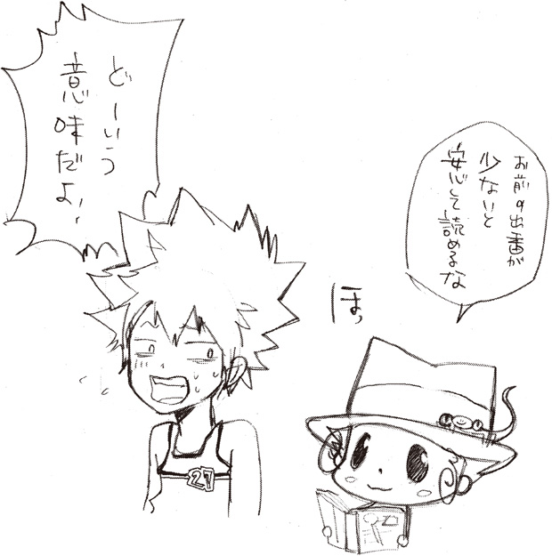
ＰＯＳＴＳＣＲＩＰＴＳ
またまた、おまたせしてしまいました。
小説版『ＲＥＢＯＲＮ！』を書かせてもらいました子安です。
読んでくれたあなたに感謝を。
これから読んでくれるあなたに祝福を。
いま、そんな気持ちでいっぱいです。
天野先生、ありがとうございました。
先生のステキな絵を、
いつもみんなよりちょっぴり早く見られる私は幸せ者です。
今回の『隠し弾３』は、
ジャンプスクエアでの連載に書下ろしを加えたものとなっています。
連載中は応援のお手紙もいただき、とても励みになりました。
おかげで、こうして一冊の本としてお送りすることもできました。
あ、まだ連載の〝一部〟なので、別のお話も続々と本にできればなー...と。
ＷＪ担当・吉田様、今回もお世話になりました。
ＷＪ新担当・籾山様、これからよろしくお願いします。
ｊ‐ＢＯＯＫＳ担当・高野様＆六郷様、また食事にでも行きましょう。
では、最後にもう一度――
ありがとうございました
子安秀明
■初出
守護者たちの鍋宴会 ジャンプＳＱ． ２００８年６月号
ラスト・フライト 前編 ジャンプＳＱ． ２００８年12月号
ラスト・フライト 後編 ジャンプＳＱ． ２００９年１月号
ミルフィオーレ・パニック 書き下ろし
天野 明 AMANO AKIRA
まんが家。本州出身。
映画をボーッと眺めるのが好き。
散歩やネコが好き。
最近はヨーグルトを毎日飲んでみたりしている。
子安秀明 KOYASU HIDEAKI
書き屋さん。
紳士。
買いものは失敗気味。
ジャンプスクエア連載『紅 kure-nai』脚本担当。
ジャンプジェイブックスDIGITAL
［家庭教師ヒットマンＲＥＢＯＲＮ！］隠し弾３ ミルフィオーレ・パニック
著者 天野明◉子安秀明
© 2017 A.AMANO / H.KOYASU
２０１７年１月31日発行
この電子書籍は、ジャンプジェイブックス「家庭教師ヒットマンＲＥＢＯＲＮ！ 隠し弾３ ミルフィオーレ・パニック」
２００９年７月８日発行の第１刷を底本としています。
装 丁 酒井布美子［Banana Grove Studio］
編集協力 高野美登里
発行者 鈴木晴彦
発行所 株式会社 集英社
東京都千代田区一ツ橋２丁目５番10号
〒１０１－８０５０
［電話］
０３－３２３０－６０８０（読者係）
制作所 大日本印刷株式会社
本作品の全部また一部を無断で複製、転載、改竄、インターネット上に掲載すること、および有償無償に関わらず、本データを第三者に譲渡することを禁じます。なお個人利用の目的であっても、コピーガードを解除しての複製は、法律で禁じられています。